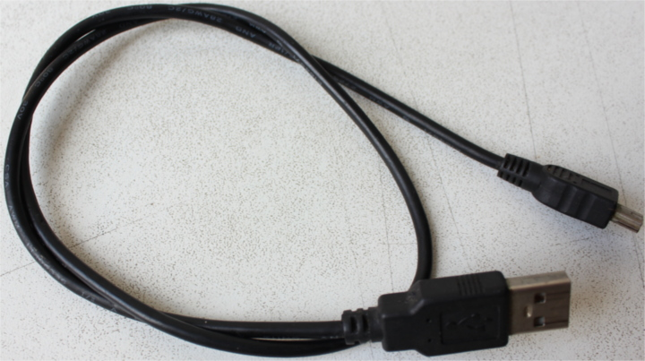
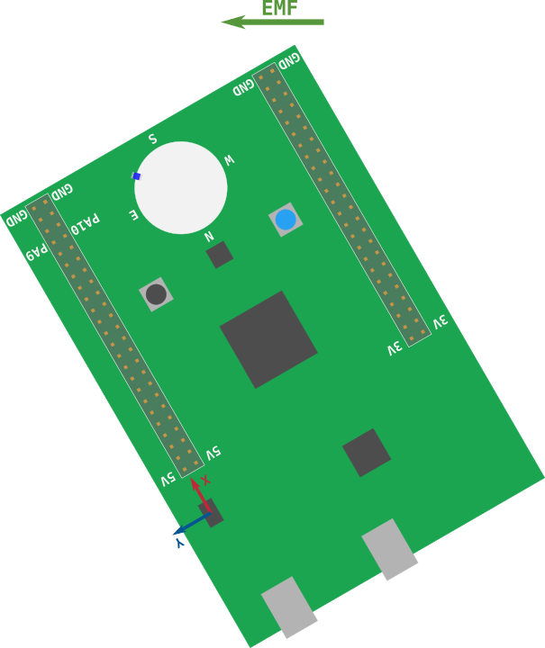

Discovery
Rustでマイクロコントローラの世界を楽しもう！
この本は、よくあるC/C++ではなく、Rustを使ったマイクロコントローラの組込みシステム入門コースです。
スコープ
以下のトピックを取り上げます（ゆくゆくは、そうしたいです）
- 「組込み」（Rust）プログラムの書き方、ビルド方法、フラッシュへの書き込み方法、デバッグ方法。
- マイクロコントローラで一般的な機能（「ペリフェラル」）。デジタル入出力、パルス幅変調（PWM）、アナログデジタル変換（ADC）、 シリアル、I2C、SPIのような一般的な通信プロトコル、など。
- マルチタスク。協調的マルチタスク vs プリエンプティブマルチタスク、割り込み、スケジューラなど。
- 制御システム。センサ、キャリブレーション、デジタルフィルタ、アクチュエータ、開ループ制御、閉ループ制御、など。
進め方
- 初心者に優しく。マイクロコントローラや組込みシステムの開発経験は必要ありません。
- ハンズオン形式で。理論を実践するためにたくさんの演習をします。あなたはほとんどの作業をここで行います。
- ツール中心に。開発を容易にするツールをたくさん使用します。GDBを使った「実際の」デバッグとログ出力を早い段階で導入します。 デバッグ機能としてLEDを使用するようなことは、ここではやりません。
目標としないこと
この本でスコープ外のことは、以下の通りです。
- Rustを教えること。このトピックについては、既に多くの教材があります。マイクロコントローラと組込みシステムに集中します。
- 電気回路または電子機器の理論についての包括的なテキストであること。 いくつかのデバイスがどのように動くか、を理解するための最低限の情報を提供します。
- Rustの低レベルな詳細を説明すること。リンカスクリプトやブートプロセス、 また、最小限のRustプログラムにこれらの2つの要素を結合する方法については、説明しません。
また、この教材を他の開発ボードに移植するつもりもありません。この本は、STM32F3DISCOVERY開発ボード専用のものです。
問題の報告
この本のソースはこのレポジトリにあります。誤植やコードに問題を発見した場合は、issueトラッカーに報告して下さい。
訳注：和訳への問題報告は、下記にお願いいたします。
和訳のソースは和訳レポジトリにあります。問題を発見した場合は、和訳issueに報告して下さい。
他の組込みRustの資料
このDiscovery本は、組込みワーキンググループが提供する組込みRust資料の1つに過ぎません。 組込みRustの本棚に、数多くの資料があります。そこには、よくある質問と回答のリストも有ります。
Sponsored by

Many thanks to integer 32 for sponsoring me to work on this book! Please give them lots of work (they do Rust consulting!) so they'll have no choice but to hire more Rustaceans <3.
背景
マイクロコントローラとは何でしょうか？
マイクロコントローラは、1チップ上のシステムです。 一方、あなたのノートPCは、プロセッサ、RAMスティック、ハードディスクドライブ、イーサーネットポートなど、いくつかの個別の部品で構成されています。 マイクロコントローラは、それらの構成部品を1つの「チップ」またはパッケージ内に組み込みます。 このことにより、最小限の部品数からなるシステムを構築することが可能になります。
マイクロコントローラで何ができるのでしょうか？
たくさんのことができます！マイクロコントローラは組込みシステムとして知られるシステムの中心を担う部品です。 組込みシステムはどこにでもありますが、通常それらを意識することはありません。組込みシステムは車のブレーキを制御したり、 衣服を洗濯したり、ドキュメントを印刷したり、冷暖房を制御したり、車の燃料消費を最適化したりします。
組込みシステムの主な特徴は、洗濯機のようにユーザーインタフェースがある場合でさえ、ユーザーの介入なしに動作することです。 ほとんどの動作は、組込みシステム自身で完結します。
組込みシステムの他の特徴としては、プロセスを制御することです。このために組込みシステムは、通常、1つ以上のセンサとアクチュエータを持ちます。 例えば、空調システムは、点在する温度計や湿度計といったセンサと、発熱体やダクトに接続されたファンのようなアクチュエータを持ちます。
マイクロコントローラを使うべきなのはいつでしょうか？
上述した全てのアプリケーションを、Linuxが動作するRaspberry Piで実装することは可能でしょう。 わざわざOSなしで動作するマイクロコントローラを使うのはなぜでしょうか？ プログラムを開発するのは、容易ではなさそうです。
主な理由はコストです。マイクロコントローラは、汎用コンピュータより非常に安価です。マイクロコントローラ自体が安いだけではないです。 マイクロコントローラは、動作のための外部電気部品を少ししか必要としません。そのため、プリント基板（PCB）を小さく、安価に設計、製造できます。
他の大きな理由は、消費電力です。マイクロコントローラは、本格的なプロセッサよりも数桁少ない電力しか消費しません。 アプリケーションがバッテリで動作するとき、この違いは大きいです。
最後になりましたが、（ハード）リアルタイム制約があるためです。 プロセスによっては、ある時間間隔以内にイベントに応答する必要があります（例えば、クアッドコプター/ドローンが突風に襲われた場合）。 もし、デッドラインを満たさない場合、そのプロセスは悲惨な結末を迎えるでしょう（例えば、ドローンは地面に墜落します）。 汎用OSを実行している汎用コンピュータは、背後で多くのサービスが動作しています。 このことは、厳密な時間制約内でのプログラム実行の保証を難しくします。
マイクロコントローラを使うべきでない時はいつでしょうか？
計算量が膨大な場合です。消費電力を低くするため、マイクロコントローラは非常に限られた計算資源しか持っていません。 例えば、マイクロコントローラによっては、浮動小数点演算のハードウェアすら搭載していません。 そのようなデバイスでは、単精度の単純な加算でさえも、実行に数百CPUサイクルかかるでしょう。
CではなくRustを使う理由はなんでしょうか？
あなたはRustとCとの違いを知っており、ここで説得する必要がないことを願っています。 あえて、1つ強調すると、それはパッケージ管理です。RustにはCargoがある一方、Cは公式の広く普及しているパッケージ管理システムがありません。 Cargoは開発を非常に容易にします。私の意見としては、パッケージ管理が簡単であることは、コードの再利用を促進します。 なぜなら、ライブラリがアプリケーションに容易に結合できるからです。このことは、ライブラリがより「実戦で使われる」ことにも良い影響があります。
Rustを使うべきでない理由は何でしょうか？
もしくは、RustよりCを選ぶ理由はなんでしょうか？
Cのエコシステムはより成熟しています。いくつもの問題に対する解決策が既に存在しています。 時間制約のあるプロセスを制御する必要がある場合、既存の商用リアルタイムOS（RTOS）を選び、問題を解決することができます。 Rustにはまだ、商用で製品レベルのRTOSがないため、自分自身で作るか、開発中のものを試す必要があります。
ハードウェア/知識の要求
この本を読む上で必要な知識は、Rustをある程度知っていることのみです。
ある程度を定量的に表現することは難しいです。
ジェネリクスを完全に理解している必要はありませんが、クロージャの使い方を知っている必要があります。
2018 editionのイディオムも知っている必要があります。特に、2018 editionではextern crateは必要ありません。
また、資料を理解するために、次のハードウェアが必要でしょう。
（いくつかの部品はオプションですが、用意することを推奨します）
- STM32F3DISCOVERYボード1台
（電子機器販売業者、サプライヤ、通信販売サイトでボードを購入できます）

- オプション。3.3VUSB <-> シリアルモジュール。このモジュールを資料では使います。 しかし、3.3Vで動作するモジュールであれば、他の物でも使用可能です。
((中国の)CH340Gモジュールが、通信販売サイトで購入できます。同じように動作し、より安価に入手できます。)
訳注：USB変換ケーブルでも大丈夫です。

- オプション。（ヘッダ付きの）HC-05 Bluetoothモジュール1つ。HC-06モジュールも使えます。
（他の中国部品と同様に、ほとんどを通信販売サイトで見つけることができます。 (米国)電子機器サプライヤは通常、何らかの理由でこれらをストックしていません）

- mini-B USBケーブル2本。1本はSTM32F3DISCOVERYボードを動かすのに必要です。 もう1本は、シリアル <-> USBモジュールがある時だけ、必要です。

注記 mini-B USBケーブルは、Androidスマートフォンに付属するUSBケーブルとは別物です。 Android付属のUSBケーブルはmicroUSBケーブルです。正しいものを持っていることを確認して下さい！
- ほぼオプション。5本のメス-メス、4本のオス-メス、1本のオス-オスジャンパ（別名 Dupont）ワイヤ。 ITMを機能させるために、1本のメス-メスワイヤが必要になる可能性が非常に高いです。 他のワイヤは、USB <-> シリアルとBluetoothモジュールを使う場合のみ必要です。

よくある質問と回答：なぜ、特定のハードウェアが必要なのですか？
私たちの人生をずっと簡単にします。
ハードウェアの差異を気にしなくて良いのであれば、資料は非常に取っ付きやすいものになります。 このことについては、私を信じて下さい。
よくある質問と回答：別の開発ボードでこの資料を理解できますか？
おそらく？2つの事項に依存します。あなたのこれまでのマイクロコントローラ開発経験と、
f3のような高レベルのcrateが、あなたの開発ボードに既に存在しているかどうかです。
私の意見としては、開発ボードが異なると、初心者向けで「話についていくのが容易」というこの文書の特徴をほとんど失うでしょう。
異なる開発ボードを持っていたり、自分を初心者とは考えていない場合は、quickstartプロジェクトテンプレートから始めた方が良いでしょう。
開発環境の構築
開発をするPCとは異なるアーキテクチャを扱うことになるので、マイクロコントローラを扱うには、いくつかのツールが必要です。 私たちは、「リモート」デバイス上でプログラムを実行し、デバッグします。
ドキュメント
ツールだけではありません。ドキュメントがなければ、マイクロコントローラを扱うことはほとんど不可能です。
この本を通して、次のドキュメントを参照します。
注意 これらはPDFファイルへのリンクです。数百ページの長さで数MBもあるファイルもあります。
ツール
下記リストのツールを利用します。最小バージョンが指定されていない場合、新しいバージョンであれば機能するはずです。 私たちがテストしたバージョンをリストに示しています。
-
Rust 1.31以上のツールチェイン
-
itmdumpv0.2.1
- OpenOCD >=0.8. テストしたバージョン: v0.9.0 and v0.10.0
arm-none-eabi-gdb。バージョン7.12以上を強く推奨します。テストしたバージョン: 7.10, 7.11, 7.12, 8.1
cargo-binutils. バージョン0.1.4以上
- LinuxおよびmacOSでは
minicom。テストしたバージョン: 2.7。読者の報告ではpiocomも動作しますが、このテキストではminicomを使います。
- Windoswでは
PuTTY（訳注：TeraTermでもおそらく大丈夫です）
あなたのノートPCがBluetooth機能を搭載していて、Bluetoothモジュールを持っている場合、Bluetoothモジュールを使うために、追加で次のツールをインストールして下さい。 これらは、全てオプションです。
- Linux。BluemanのようなBluetooth管理アプリケーションがない場合のみ、次のツールをインストールして下さい。
bluezhcitoolrfcommrfkill
macOS / OSX / Windowsユーザーは、OS出荷時のデフォルトBluetoothマネージャだけが必要です。
次に、いくつかのOSに依存しないツールのインストール手順を掲載します。
rustc & Cargo
https://rustup.rsの手順に従って、rustupをインストールします。
既にrustupをインストールしてある場合、stableチャネルになっていて、stableツールチェインが最新であることを確認して下さい。
rustc -Vは、下よりも新しい日付を返す必要が有ります。
$ rustc -V
rustc 1.31.0 (abe02cefd 2018-12-04)
itmdump
$ cargo install itm --vers 0.3.1
$ itmdump -V
itmdump 0.3.1
cargo-binutils
$ rustup component add llvm-tools-preview
$ cargo install cargo-binutils --vers 0.1.4
$ cargo size -- -version
LLVM (http://llvm.org/):
LLVM version 8.0.0svn
Optimized build.
Default target: x86_64-unknown-linux-gnu
Host CPU: skylake
OS固有の手順
使用しているOSに固有の手順に従って下さい。
Linux
いくつかのLinuxディストリビューションのインストールコマンドを示します。
必須のパッケージ
- Ubuntu 18.04以上 / Debian stretch以降
注記 gdb-multiarchは、ARM Cortex-Mプログラムをデバッグするために使用するGDBのコマンドです。
$ sudo apt-get install \
gdb-multiarch \
minicom \
openocd
- Ubuntu 14.04と16.04
注記 arm-none-eabi-gdbは、ARM Cortex-Mプログラムをデバッグするために使用するGDBのコマンドです。
$ sudo apt-get install \
gdb-arm-none-eabi \
minicom \
openocd
- Fedora 23以上
注記 arm-none-eabi-gdbは、ARM Cortex-Mプログラムをデバッグするために使用するGDBのコマンドです。
$ sudo dnf install \
arm-none-eabi-gdb \
minicom \
openocd
- Arch Linux
注記 arm-none-eabi-gdbは、ARM Cortex-Mプログラムをデバッグするために使用するGDBのコマンドです。
$ sudo pacman -S \
arm-none-eabi-gdb \
minicom
openocdは、公式のArchレポジトリから入手できません。しかし、AURからインストールするか、
次のようにソースからコンパイルすることができます。
git clone git://git.code.sf.net/p/openocd/code openocd-code
cd openocd-code
./bootstrap
./configure
make && make install
- 他ディストリビューションにおける
arm-none-eabi-gdb
パッケージが用意されていないディストリビューションについては、
ARM's pre-built toolchainから「Linux 64-bit」ファイルをダウンロードして、
binディレクトリにパスを通して下さい。
下記は、やり方の1例です。
$ mkdir -p ~/local && cd ~/local
$ tar xjf /path/to/downloaded/file/gcc-arm-none-eabi-7-2017-q4-major-linux.tar.bz2.tbz
次に、エディタを使って、適切なシェル初期化ファイル（例えば、~/.zshrcや~/.bashrc）のPATHを追加して下さい。
PATH=$PATH:$HOME/local/gcc-arm-none-eabi-7-2017-q4-major/bin
オプションのパッケージ
- Ubuntu / Debian
$ sudo apt-get install \
bluez \
rfkill
- Fedora
$ sudo dnf install \
bluez \
rfkill
- Arch Linux
$ sudo pacman -S \
bluez \
bluez-utils \
rfkill
udevルール
このルールにより、ルート権限（つまりsudo）なしで、F3とシリアルモジュールのようなUSBデバイスを使えるようにします。
下記の内容で、/etc/udev/rules.dディレクトリに2つのファイルを作成します。
$ cat /etc/udev/rules.d/99-ftdi.rules
# FT232 - USB <-> Serial Converter
ATTRS{idVendor}=="0403", ATTRS{idProduct}=="6001", MODE:="0666"
$ cat /etc/udev/rules.d/99-openocd.rules
# STM32F3DISCOVERY rev A/B - ST-LINK/V2
ATTRS{idVendor}=="0483", ATTRS{idProduct}=="3748", MODE:="0666"
# STM32F3DISCOVERY rev C+ - ST-LINK/V2-1
ATTRS{idVendor}=="0483", ATTRS{idProduct}=="374b", MODE:="0666"
その後、udevルールをリロードします。
$ sudo udevadm control --reload-rules
既にボードをノートPCに接続している場合、一度抜いてから、もう一度接続します。
それでは、次のセクションに進んで下さい。
Windows
arm-none-eabi-gdb
ARMはWindows向けに.exeインストーラを提供しています。ここから1つを入手して、手順に従って下さい。
インストールプロセスが終了する直前に"環境変数にパスを追加"オプションを選択します。
その後、ツールが%PATH%にあることを確認します。
$ arm-none-eabi-gcc -v
(..)
gcc version 5.4.1 20160919 (release) (..)
OpenOCD
Windows用のOpenOCDの公式バイナリはありませんが、こちらの非公式なリリースが利用可能です。
0.10.xのzipファイルを入手し、ハードディスクのどこかに展開して下さい(C:\OpenOCDをお勧めしますが、あなたが分かるドライブ名を使用してください)。
その後、%PATH%環境変数がC:\OpenOCD\bin(もしくはあなたがOpenOCDのzipファイルを展開したパス)を含むように更新します。
OpenOCDが%PATH%にあることを確認します。
$ openocd -v
Open On-Chip Debugger 0.10.0
(..)
PuTTY
このサイトから最新のputty.exeをダウンロードし、%PATH%が通っているどこかに置いて下さい。
ST-LINK USB driver
このUSBドライバもインストールする必要があります。そうでなければOpenOCDは動きません。インストーラの手順に従って下さい。 そして、正しいドライバのバージョン(32ビットか64ビット)をインストールすることを確認して下さい。
以上です！次のセクションに進んで下さい。
macOS
全てのツールは、Homebrewを使ってインストールできます。
$ brew cask install gcc-arm-embedded
$ brew install minicom openocd
brew caskコマンドがうまく動かない場合(例えば、error: unknown command: cask)、最初にbrew tap Caskroom/tapを実行してから再実行して下さい。
以上です！次のセクションに進んで下さい。
インストールの確認
全てのツールが正しくインストールされているか、確認しましょう。
Linuxのみ実行
パーミッションの確認
USBケーブルを使って、ノートPCをF3に接続して下さい。 ボード端の中央にある「USB ST-LINK」とラベルが付いたものにケーブルを接続して下さい。
これで、F3が/dev/bus/usbにUSBデバイス（ファイル）として現れるはずです。
どのように番号付けされるか調べてみましょう。
$ lsusb | grep -i stm
Bus 003 Device 004: ID 0483:374b STMicroelectronics ST-LINK/V2.1
$ # ^^^ ^^^
私の場合、F3は、3番目のバスに接続されて、4番目のデバイスとして番号付けされています。
これは、/dev/bus/usb/003/004がF3であることを意味します。パーミッションを確認しましょう。
$ ls -l /dev/bus/usb/003/004
crw-rw-rw- 1 root root 189, 20 Sep 13 00:00 /dev/bus/usb/003/004
パーミッションは、crw-rw-rw-でなければなりません。もし違う場合、udevルールを確認し、次のコマンドでリロードしてみて下さい。
$ sudo udevadm control --reload-rules
上記の手順をシリアルモジュールについても繰り返します。
F3を抜いて、シリアルモジュールを接続します。すると、関連するファイルが見つかります。
$ lsusb | grep -i ft232
Bus 003 Device 005: ID 0403:6001 Future Technology Devices International, Ltd FT232 Serial (UART) IC
私の場合、/dev/bus/usb/003/005です。パーミッションを確認します。
$ ls -l /dev/bus/usb/003/005
crw-rw-r-- 1 root root 189, 21 Sep 13 00:00 /dev/bus/usb/003/005
前回同様、パーミッションは、crw-rw-r--でなければなりません。
全てのOS
初めてのOpenOCD接続
USBケーブルを使って、ノートPCをF3に接続して下さい。 ボード端の中央にある「USB ST-LINK」とラベルが付いたものにケーブルを接続して下さい。
ボードにUSBケーブルを接続した直後、2つの赤いLEDが点灯するはずです。
次に、このコマンドを実行して下さい。
$ # *nix
$ openocd -f interface/stlink-v2-1.cfg -f target/stm32f3x.cfg
$ # Windows
$ # 注記 cygwinユーザーは、-sフラグで問題があったと報告しています。もし、問題に遭遇した場合、
$ # `C:\OpenOCD\share\scripts`ディレクトリからopenocdを呼ぶことができます。
$ openocd -s C:\OpenOCD\share\scripts -f interface/stlink-v2-1.cfg -f target/stm32f3x.cfg
注記 Windowsユーザーへ。
C:\OpenOCDは、OpenOCDをインストールしたディレクトリです。
重要 STM32F3DISCOVERYボードには、2つ以上のハードウェアリビジョンが存在します。古いリビジョンのハードウェアについては、 「interface」引数を
-f interface/stlink-v2.cfgに変更する必要が有ります（-1が最後についていないことに留意して下さい） 代わりに、古いリビジョンでは、-f interface/stlink-v2-1.cfg -f target/stm32f3x.cfgの代わりに-f board/stm32f3discovery.cfgを使用できます。
次のような出力が確認できるはずです。
Open On-Chip Debugger 0.10.0
Licensed under GNU GPL v2
For bug reports, read
http://openocd.org/doc/doxygen/bugs.html
Info : auto-selecting first available session transport "hla_swd". To override use 'transport select <transport>'.
adapter speed: 1000 kHz
adapter_nsrst_delay: 100
Info : The selected transport took over low-level target control. The results might differ compared to plain JTAG/SWD
none separate
Info : Unable to match requested speed 1000 kHz, using 950 kHz
Info : Unable to match requested speed 1000 kHz, using 950 kHz
Info : clock speed 950 kHz
Info : STLINK v2 JTAG v27 API v2 SWIM v15 VID 0x0483 PID 0x374B
Info : using stlink api v2
Info : Target voltage: 2.915608
Info : stm32f3x.cpu: hardware has 6 breakpoints, 4 watchpoints
（確認できない場合、トラブルシューティングの手順を確認して下さい。）
openocdは端末をブロックします。それで問題ありません。
また、赤いLEDの1つ（USBポートに一番近いもの）が、周期的に赤と緑に点灯し始めるはずです。
これでおしまいです！ボードは動いています。それでは、openocdを終了できます。
ハードウェアとの出会い
これから使用するハードウェアについて詳しくなりましょう。
STM32F3DISCOVERY（「F3」）

この本では、このボードを「F3」と呼びます。
このボードには何が搭載されているか見てみましょう。
- STM32F303VCT6マイクロコントローラが1つ。このマイクロコントローラは次のものを搭載しています。
-
シングルコアのARM Cortex-M4Fプロセッサ。このプロセッサは単精度浮動小数点演算を行うハードウェアを搭載し、 最大72MHzのクロック周波数で動作します。
-
256 KiBの「Flash」メモリ（1 KiB = 1024バイト）
-
48 KiBのRAM
-
多くの「ペリフェラル」。タイマ、GPIO、I2C、SPI、USARTなど。
-
2つの横方向の「ヘッダー」に露出しているたくさんの「ピン」
-
重要 このマイクロコントローラは、（おおよそ）3.3Vで動作します。
-
- ジャイロスコープが1つ
- 円形に配置された8個のユーザLED
- 第2のマイクロコントローラ: STM32F103CBT。このマイクロコントローラは、実際には、ST-LINKというオンボードプログラマおよびデバッガの一部であり、 「USB ST-LINK」という名前のUSBポートに接続されています。
- 「USB USER」というラベルが付いている第2のUSBポート。 このUSBポートは、メインマイクロコントローラ（STM32F303VCT6）に接続されており、アプリケーションで利用できます。
シリアルモジュール

このモジュールは、F3のマイクロコントローラとノートPCとの間でデータをやり取りするために使います。 このモジュールは、USBケーブルを使ってノートPCに接続されます。ここでは、これ以上言及しません。
Bluetoothモジュール

このモジュールは、シリアルモジュールと全く同じ目的で使いますが、データはUSBの代わりにBluetooth経由で送信します。
LEDルーレット
さて、次のアプリケーションをビルドするところから始めましょう。

私は、このアプリケーションを実装するための高レベルなAPIを提供します。しかし、心配しないで下さい。低レベルな事項も、後ほど扱います。 この章の主な目的は、Flashに書き込むこととデバッグプロセスに慣れることです。
この文書を通して、discoveryレポジトリにあるスターターコードを使います。 常に手元のコードが、最新バージョンのmasterブランチであることを確かめて下さい。このウェブサイトは、masterブランチに追従しています。
スターターコードは、discoveryレポジトリのsrcディレクトリ内にあります。このディレクトリ内には、この本の各章の名前がついたディレクトリがあります。
ほとんどのこれらのディレクトリは、Cargoプロジェクトの開始地点です。
それでは、src/05-led-rouletteディレクトリに飛び込みましょう。src/main.rsファイルを確認して下さい。
#![deny(unsafe_code)] #![no_main] #![no_std] use aux5::entry; #[entry] fn main() -> ! { let _y; let x = 42; _y = x; // 無限ループ。このスタックフレームから抜けないためのものです。 loop {} }
マイクロコントローラのプログラムは2つの点で通常のプログラムとは異なります。#![no_std]と#![no_main]です。
no_stdアトリビュートは、プログラムがstdクレートを使わないことを意味しています。stdクレートはOSが基盤として存在していることを前提としています。
マイクロコントローラのプログラムは、代わりに、coreクレートを使います。
coreクレートはstdのサブセットで、ベアメタルシステム（つまり、ファイルやソケットと言ったOSの抽象化なしに動作するシステム）で動作することができます。
no_mainアトリビュートは、このプログラムが標準のmainインタフェースを使わないことを意味します。標準のmainインタフェースは、
引数を受け取るコマンドラインアプリケーション向けに作られています。
カスタムエントリーポイントを定義するために、標準のmainの代わりに、cortex-m-rtからentryアトリビュートを使います。
このプログラムでは、「main」という名前のエントリーポイントを持ちますが、どのような名前でも使えます。
エントリーポイントの関数はfn() -> !のシグネチャを持つ必要があります。このシグネチャ型は、関数が返らないことを示しています。
これは、このプログラムが停止しないことを意味します。
注意深く観察すると、Cargoプロジェクトに.cargoディレクトリがあることに気づくでしょう。
このディレクトリはCargoの設定ファイル（.cargo/config）を含んでいます。この設定ファイルは、
ターゲットデバイスで要求されるプログラムのメモリレイアウトに合わせて、リンクプロセスを微調整します。
この修正が加えられたリンクプロセスは、cortex-m-rtクレートで求められます。
では、プログラムをビルドするところから始めましょう。
ビルド
最初の一歩は、「バイナリ」クレートをビルドすることです。マイクロコントローラは、あなたのノートPCとアーキテクチャが異なるため、クロスコンパイルする必要が有ります。
Rustでのクロスコンパイルは、rustcかCargoに追加の--targetフラグを渡すだけです。
複雑な部分は、フラグの引数、つまりターゲットの名前を見つけ出すことです。
F3のマイクロコントローラは、Cortex-M4Fプロセッサを搭載しています。
rustcは、Cortex-Mアーキテクチャ向けにクロスコンパイルする方法を知っており、4つの異なるターゲットを提供しています。
これらのターゲットは、Cortex-Mアーキテクチャの異なるプロセッサファミリを対象としています。
thumbv6m-none-eabi, Cortex-M0とCortex-M1プロセッサ向けthumbv7m-none-eabi, Cortex-M3プロセッサ向けthumbv7em-none-eabi, Cortex-M4とCortex-M7プロセッサ向けthumbv7em-none-eabihf, Cortex-M4FとCortex-M7Fプロセッサ向け
F3に対しては、thumbv7em-none-eabihfターゲットを使います。
クロスコンパイルする前に、あらかじめターゲット向けにコンパイルされた標準ライブラリ（実際にはその縮小版）をダウンロードしなければなりません。
rustupを使ってダウンロードできます。
$ rustup target add thumbv7em-none-eabihf
上記のコマンドは一度だけ実行する必要が有ります。rustupは、ツールチェインをアップデートするときに、
新しい標準ライブラリ（rust-stdコンポーネント）を再インストールしてくれます。
rust-stdコンポーネントがあれば、Cargoを使ってプログラムをクロスコンパイルできます。
$ # `src/05-led-roulette`ディレクトリにいることを確認して下さい
$ cargo build --target thumbv7em-none-eabihf
Compiling semver-parser v0.7.0
Compiling aligned v0.1.1
Compiling libc v0.2.35
Compiling bare-metal v0.1.1
Compiling cast v0.2.2
Compiling cortex-m v0.4.3
(..)
Compiling stm32f30x v0.6.0
Compiling stm32f30x-hal v0.1.2
Compiling aux5 v0.1.0 (file://$PWD/aux)
Compiling led-roulette v0.1.0 (file://$PWD)
Finished dev [unoptimized + debuginfo] target(s) in 35.84 secs
注記 このクレートを必ず最適化なしでコンパイルして下さい。提供しているCargo.tomlと上記のビルドコマンドは、最適化をオフにしています。
OK、これで実行ファイルが作成されました。この実行ファイルは、LEDを点滅させません。これは、この章の後半でビルドする単純なものです。 正当性検査のため、作成した実行ファイルが本当にARMのバイナリかどうか確認してみましょう。
$ # `readelf -h target/thumbv7em-none-eabihf/debug/led-roulette`と同じです
$ cargo readobj --target thumbv7em-none-eabihf --bin led-roulette -- -file-headers
ELF Header:
Magic: 7f 45 4c 46 01 01 01 00 00 00 00 00 00 00 00 00
Class: ELF32
Data: 2's complement, little endian
Version: 1 (current)
OS/ABI: UNIX - System V
ABI Version: 0x0
Type: EXEC (Executable file)
Machine: ARM
Version: 0x1
Entry point address: 0x8000197
Start of program headers: 52 (bytes into file)
Start of section headers: 740788 (bytes into file)
Flags: 0x5000400
Size of this header: 52 (bytes)
Size of program headers: 32 (bytes)
Number of program headers: 2
Size of section headers: 40 (bytes)
Number of section headers: 20
Section header string table index: 18
次は、このプログラムをマイクロコントローラのFlashに書き込みます。
Flashへの書き込み
Flashへの書き込みとは、マイクロコントローラの（永続）メモリにプログラムを移動するプロセスのことです。 一度、Flashへ書き込むと、マイクロコントローラは、電源が入るたびに書き込まれたプログラムを実行します。
今回の場合、led-rouletteプログラムが、マイクロコントローラのメモリ内にある唯一のプログラムになります。
これは、マイクロコントローラ上で他には何も実行されないことを意味します。OSも「デーモン」もありません。
led-rouletteは、デバイスを完全に制御できます。
実際にFlashへ書き込みましょう。まず始めに、OpenOCDを起動する必要が有ります。これは、前のセクションで行いました。
しかし、今回はこのコマンドを一時ディレクトリ（*nixでは/tmp、Windowsでは%TEMP%）の中で実行します。
F3がノートPCに接続されていることを確認し、新しい端末で次のコマンドを実行して下さい。
$ # *nix
$ cd /tmp
$ # Windows
$ cd %TEMP%
$ # Windowsでは、追加で`-s %PATH_TO_OPENOCD%\share\scripts`が必要なことを思い出して下さい。
$ openocd \
-f interface/stlink-v2-1.cfg \
-f target/stm32f3x.cfg
注記 ボードが古いリビジョンの場合、
openocdに若干異なる引数を渡す必要があります。 詳細はこのセクションを見返して下さい。
このプログラムは端末をブロックします。端末を開いたままにしておいて下さい。
さて、このコマンドが実際に何をやっているのか、説明するのに良いタイミングです。
F3が実際には2つのマイクロコントローラを搭載していると述べました。1つはプログラマ/デバッガとして使用されます。 プログラマとして使用されるボードの一部をST-LINKと呼びます（STマイクロエレクトロニクスがそう呼ぶと決めたからです）。 ST-LINKは、Serial Wire Debug (SWD) インタフェースを使ってターゲットのマイクロコントローラと接続されます （SWDインタフェースはARMの標準なので、他のCortex-Mベースのマイクロコントローラを扱う時でも使うでしょう）。 SWDインタフェースは、マイクロコントローラのFlashに書き込み、デバッグするために使用されます。 ST-LINKは「USB ST-LINK」ポートに接続されています。そのため、F3をノートPCに接続した時に、USBデバイスとして現れます。

OpenOCDについては、SWDやJTAGのようなデバッグプロトコルを公開するUSBデバイスに、GDBサーバーのようなサービスを提供するソフトウェアです。
実際のコマンドで、.cfgファイルは、OpenOCDにST-LINK USBデバイスを探させて（interface/stlink-v2-1.cfg）、
STM32F3XXマイクロコントローラがST-LINKに接続されているのを求めています(target/stm32f3x.cfg)。
OpenOCDの出力は次のようになります。
Open On-Chip Debugger 0.9.0 (2016-04-27-23:18)
Licensed under GNU GPL v2
For bug reports, read
http://openocd.org/doc/doxygen/bugs.html
Info : auto-selecting first available session transport "hla_swd". To override use 'transport select <transport>'.
adapter speed: 1000 kHz
adapter_nsrst_delay: 100
Info : The selected transport took over low-level target control. The results might differ compared to plain JTAG/SWD
none separate
Info : Unable to match requested speed 1000 kHz, using 950 kHz
Info : Unable to match requested speed 1000 kHz, using 950 kHz
Info : clock speed 950 kHz
Info : STLINK v2 JTAG v27 API v2 SWIM v15 VID 0x0483 PID 0x374B
Info : using stlink api v2
Info : Target voltage: 2.919073
Info : stm32f3x.cpu: hardware has 6 breakpoints, 4 watchpoints
「6 breakpoints, 4 watchpoints」の部分は、プロセッサで利用可能なデバッグ機能を示しています。
OpenOCDはGDBサーバーの機能を提供すると言いました。それでは、早速接続してみましょう。
$ <gdb> -q target/thumbv7em-none-eabihf/debug/led-roulette
Reading symbols from target/thumbv7em-none-eabihf/debug/led-roulette...done.
(gdb)
注記 <gdb>は、ARMバイナリをデバッグできるGDBプログラムを意味しています。
これは、arm-none-eabi-gdbかgdb-multiarchかgdbです。
あなたのシステムに依存しているため、3つ全てを試してみる必要があるでしょう。
まだGDBシェルを開いただけです。OpenOCDのGDBサーバーに実際に接続するためには、GDBシェル内で次のコマンドを実行します。
(gdb) target remote :3333
Remote debugging using :3333
0x00000000 in ?? ()
デフォルトでは、OpenOCDのGDBサーバーは3333番のTCPポート（localhost）で待ち受けています。 上記コマンドはこのポートへと接続します。
上記コマンドを実行した後、次のような出力が、OpenOCDの端末に現れるでしょう。
Info : stm32f3x.cpu: hardware has 6 breakpoints, 4 watchpoints
+Info : accepting 'gdb' connection on tcp/3333
+Info : device id = 0x10036422
+Info : flash size = 256kbytes
もう一歩です。デバイスのFlashに書き込むには、loadコマンドをGDBシェル内で使います。
(gdb) load
Loading section .vector_table, size 0x188 lma 0x8000000
Loading section .text, size 0x38a lma 0x8000188
Loading section .rodata, size 0x8 lma 0x8000514
Start address 0x8000188, load size 1306
Transfer rate: 6 KB/sec, 435 bytes/write.
これで終わりです。OpenOCDの端末に新しい出力が見られるでしょう。
Info : flash size = 256kbytes
+Info : Unable to match requested speed 1000 kHz, using 950 kHz
+Info : Unable to match requested speed 1000 kHz, using 950 kHz
+adapter speed: 950 kHz
+target state: halted
+target halted due to debug-request, current mode: Thread
+xPSR: 0x01000000 pc: 0x08000194 msp: 0x2000a000
+Info : Unable to match requested speed 8000 kHz, using 4000 kHz
+Info : Unable to match requested speed 8000 kHz, using 4000 kHz
+adapter speed: 4000 kHz
+target state: halted
+target halted due to breakpoint, current mode: Thread
+xPSR: 0x61000000 pc: 0x2000003a msp: 0x2000a000
+Info : Unable to match requested speed 1000 kHz, using 950 kHz
+Info : Unable to match requested speed 1000 kHz, using 950 kHz
+adapter speed: 950 kHz
+target state: halted
+target halted due to debug-request, current mode: Thread
+xPSR: 0x01000000 pc: 0x08000194 msp: 0x2000a000
プログラムはロードされました。デバッグしてみましょう！
デバッグ
既にデバッグセッションの中に居ます。プログラムをデバッグしてみましょう。
loadコマンドの後、プログラムは、エントリポイントで停止しています。このことは、GDB出力の「Start address 0x8000XXX」という部分からわかります。
エントリポイントは、プロセッサ / CPUが最初に実行するプログラムの一部です。
スタータープロジェクトでは、main関数の前に実行する追加のコードを提供しています。
ここでは、「mainの前の」部分には興味がないので、main関数の直前までスキップします。ブレイクポイントを使って、これができます。
(gdb) break main
Breakpoint 1 at 0x800018c: file src/05-led-roulette/src/main.rs, line 10.
(gdb) continue
Continuing.
Note: automatically using hardware breakpoints for read-only addresses.
Breakpoint 1, main () at src/05-led-roulette/src/main.rs:10
10 let x = 42;
ブレイクポイントは、プログラムの通常フローを停止するために使います。continueコマンドは、ブレイクポイントに到達するまでプログラムを実行します。
今回の場合、main関数に到達するまでです。なぜなら、そこにブレイクポイントがあるからです。
GDBが「Breakpoint 1」と出力していることに留意して下さい。今回のプロセッサでは、6個のブレイクポイントしか使えないことを思い出して下さい。 これらのメッセージに注意を払うことは大事なことです。
より良いデバッグ経験のために、GDBのテキストユーザーインタフェース（TUI）を使います。 このモードに入るには、次のコマンドをGDBシェルに入力します。
(gdb) layout src
注記 Windowsユーザーの方はごめんなさい。GNU ARM Embedded Toolchainで配布されているGDBはTUIモードをサポートしていません
:-(。

次のコマンドで、いつでもTUIモードから抜けることができます。
(gdb) tui disable
今、mainの最初に居ます。stepコマンドを使って、プログラムをステートメントごとに実行することができます。
_y = xステートメントに到達するために、コマンドを2回使います。一度、stepを入力すると、エンターを押すだけで、同じコマンドを再び実行できます。
(gdb) step
14 _y = x;
TUIモードを使っていない場合、各stepを呼ぶごとに、GDBは現在のステートメントを行番号と一緒に出力します。
現在、_y = xステートメントの「上」に居て、まだこのステートメントは実行されていません。
つまり、xは初期化されていますが、_yは初期化されていません。printコマンドを使って、スタック/ローカルな変数を調べてみましょう。
(gdb) print x
$1 = 42
(gdb) print &x
$2 = (i32 *) 0x10001ff4
(gdb) print _y
$3 = -536810104
(gdb) print &_y
$4 = (i32 *) 0x10001ff0
予想通り、xは42という値を格納しています。しかし、_yは、-536810104 (?)という値を格納しています。
_yは、まだ初期化されていないため、ゴミが入っています。
print &xコマンドは、変数xのアドレスを出力します。ここで興味深いことは、GDBが参照の型を出力することです。i32*は、i32のポインタ値です。
他におもしろい点は、xと_yのアドレスがお互いに非常に近いことです。これらのアドレスは、ちょうど4バイトだけ離れています。
ローカル変数を1つずつ出力する代わりに、info localsコマンドを使うこともできます。
(gdb) info locals
x = 42
_y = -536810104
では、もう一度stepを実行すると、loop {}ステートメントに到達します。
(gdb) step
17 loop {}
そして、_yは初期化されているはずです。
(gdb) print _y
$5 = 42
loop {}ステートメント上で再度stepを使うと、プログラムがそのステートメントを抜けることがないため、動けなくなります。
代わりに、layout asmコマンドで逆アセンブル画面に切り替えます。その上で、stepiを使って、1命令ずつ前に進めます。
layout srcコマンドを使うことで、いつでもRustソースコード画面に戻ることができます。
注記 間違って
stepを使ってしまい、GDBが動かなくなった場合、Ctrl+Cを打つことで、動けるようになります。
(gdb) layout asm

TUIモードを使っていない場合、disassemble /mコマンドを使うことで、現在実行中の行周辺のプログラムを逆アセンブルできます。
(gdb) disassemble /m
Dump of assembler code for function main:
7 #[entry]
0x08000188 <+0>: sub sp, #8
0x0800018a <+2>: movs r0, #42 ; 0x2a
8 fn main() -> ! {
9 let _y;
10 let x = 42;
0x0800018c <+4>: str r0, [sp, #4]
11 _y = x;
0x0800018e <+6>: ldr r0, [sp, #4]
0x08000190 <+8>: str r0, [sp, #0]
12
13 // 無限ループ。このスタックフレームから抜けないためのものです。
14 loop {}
=> 0x08000192 <+10>: b.n 0x8000194 <main+12>
0x08000194 <+12>: b.n 0x8000194 <main+12>
End of assembler dump.
左側にある太矢印=>が見えますか？これは、プロセッサが次に実行する命令を示しています。
TUIモードではない場合、各stepiコマンドにより、GDBはステートメントと、行番号、およびプロセッサが次に実行する命令のアドレスを表示します。
(gdb) stepi
0x08000194 14 loop {}
(gdb) stepi
0x08000194 14 loop {}
さらに興味深いものに行く前に、最後のトリックがあります。GDBに次のコマンドを入力して下さい。
(gdb) monitor reset halt
Unable to match requested speed 1000 kHz, using 950 kHz
Unable to match requested speed 1000 kHz, using 950 kHz
adapter speed: 950 kHz
target halted due to debug-request, current mode: Thread
xPSR: 0x01000000 pc: 0x08000196 msp: 0x10002000
(gdb) continue
Continuing.
Breakpoint 1, main () at src/05-led-roulette/src/main.rs:10
10 let x = 42;
mainの最初に戻ってきます！
monitor reset haltは、マイクロコントローラをリセットし、プログラムのエントリポイントで停止します。
続くcontinueコマンドは、ブレイクポイントがあるmain関数に到達するまで、プログラムを実行します。
このコンボは、間違って調査の対象とするプログラムの一部をスキップしてしまったときに便利です。 プログラムの状態を、最初の状態に、簡単にロールバックすることができます。
ただし書き：
resetコマンドは、RAMをクリアしたり、触ったりしません。メモリは、前回実行した時の値を持ち続けています。 プログラムが、未定義動作の定義である初期化されていない変数の値に依存しない限り、このことは問題になりません。
このデバッグセッションは完了です。quitコマンドでデバッグセッションを終了できます。
(gdb) quit
A debugging session is active.
Inferior 1 [Remote target] will be detached.
Quit anyway? (y or n) y
Detaching from program: $PWD/target/thumbv7em-none-eabihf/debug/led-roulette, Remote target
Ending remote debugging.
注記 デフォルトのGDBコマンドラインインタフェースが好みでない場合、gdb-dashboardを確認して下さい。 このツールは、Pythonを使用して、デフォルトのGDBコマンドラインインタフェースを、レジスタやソースコード、アセンブリなどを表示するダッシュボードに変換します。
ただし、OpenOCDは、終了しないで下さい！OpenOCDは、この後繰り返し使用します。 動作したままにしておくほうが良いです。
次は何でしょうか？約束した高レベルのAPIです。
LedとDelayの抽象化
これから、LEDルーレットアプリケーションを実装するための、2つの高レベルな抽象化を紹介します。
補助クレートのaux5は、initという初期化関数を公開しています。
この関数を呼び出すと、DelayとLedsの値からなるタプルが返ってきます。
Delayは、ミリ秒単位で指定された時間の間、プログラムをブロックします。
Ledsは、8個のLedからなる配列です。各Ledは、F3ボード上のLEDの1つを表しています。
そして、onとoffという2つのメソッドを公開しており、それぞれ、LEDをオンまたはオフにします。
スターターコードを次のように修正して、2つの抽象化を試してみましょう。
#![deny(unsafe_code)] #![no_main] #![no_std] use aux5::{entry, prelude::*, Delay, Leds}; #[entry] fn main() -> ! { let (mut delay, mut leds): (Delay, Leds) = aux5::init(); let half_period = 500_u16; loop { leds[0].on(); delay.delay_ms(half_period); leds[0].off(); delay.delay_ms(half_period); } }
ビルドします。
$ cargo build --target thumbv7em-none-eabihf
注記 GDBセッションを開始する前に、プログラムを再ビルドすることを忘れることがあります。このうっかりミスは、非常に混乱するデバッグセッションを作り上げます。 この問題を避けるために、
cargo buildではなくcargo runを呼び出すことができます。cargo runは、ビルドとデバッグセッションの開始を行い、プログラムの再コンパイル忘れが起きないようにしてくれます。
次に、前のセクションで行ったとおり、Flashへの書き込み手順を繰り返します。
$ # これはプログラムのGDBセッションを開始します。バイナリのパスを指定する必要はありません。
$ arm-none-eabi-gdb -q target/thumbv7em-none-eabihf/debug/led-roulette
Reading symbols from target/thumbv7em-none-eabihf/debug/led-roulette...done.
(gdb) target remote :3333
Remote debugging using :3333
(..)
(gdb) load
Loading section .vector_table, size 0x188 lma 0x8000000
Loading section .text, size 0x3fc6 lma 0x8000188
Loading section .rodata, size 0xa0c lma 0x8004150
Start address 0x8000188, load size 19290
Transfer rate: 19 KB/sec, 4822 bytes/write.
(gdb) break main
Breakpoint 1 at 0x800018c: file src/05-led-roulette/src/main.rs, line 9.
(gdb) continue
Continuing.
Note: automatically using hardware breakpoints for read-only addresses.
Breakpoint 1, main () at src/05-led-roulette/src/main.rs:9
9 let (mut delay, mut leds): (Delay, Leds) = aux5::init();
では、コードをステップ実行していきましょう。今回は、stepの代わりに、nextコマンドを使います。
nextは、関数呼び出し時、関数内に入らずに、ステップオーバーします。
(gdb) next
11 let half_period = 500_u16;
(gdb) next
13 loop {
(gdb) next
14 leds[0].on();
(gdb) next
15 delay.delay_ms(half_period);
leds[0].on()ステートメント実行後、北を指し示す赤いLEDが点灯するはずです。
プログラムのステップオーバー実行を続けます。
(gdb) next
17 leds[0].off();
(gdb) next
18 delay.delay_ms(half_period);
delay_msの呼び出しは、0.5秒の間プログラムをブロックしますが、それに気づかないかもしれません。
nextコマンドの実行にいくらか時間がかかるためです。
しかし、leds[0].off()ステートメントをステップオーバーすると、赤いLEDが消灯するでしょう。
すでに、このプログラムが何をするか、予測できているでしょう。continueコマンドを使って、中断せずに実行しましょう。
(gdb) continue
Continuing.
次は、もっと面白いことをやります。GDBを使って、プログラムの動作を変更します。
まずは、Ctrl+Cを入力し、無限ループを停止します。Led::onか、Led::offかdelay_ms内のどこかに居るでしょう。
Program received signal SIGINT, Interrupt.
0x080033f6 in core::ptr::read_volatile (src=0xe000e010) at /checkout/src/libcore/ptr.rs:472
472 /checkout/src/libcore/ptr.rs: No such file or directory.
私の場合、read_volatile関数の中で、プログラムの実行が停止していました。
GDBの出力は、core::ptr::read_volatile (src=0xe000e010)という面白い情報を示しています。
これは、この関数がcoreクレートから来ており、src = 0xe000e010という引数で呼び出されていることを意味します。
ご存知の通り、関数の引数を表示するための、より明確な方法は、info argsコマンドを使うことです。
(gdb) info args
src = 0xe000e010
どこでプログラムが停止したかに関わらず、backtraceコマンド（btという省略形があります）を使って、
どのようにそこに到達したか、を見ることができます。
(gdb) backtrace
#0 0x080033f6 in core::ptr::read_volatile (src=0xe000e010)
at /checkout/src/libcore/ptr.rs:472
#1 0x08003248 in <vcell::VolatileCell<T>>::get (self=0xe000e010)
at $REGISTRY/vcell-0.1.0/src/lib.rs:43
#2 <volatile_register::RW<T>>::read (self=0xe000e010)
at $REGISTRY/volatile-register-0.2.0/src/lib.rs:75
#3 cortex_m::peripheral::syst::<impl cortex_m::peripheral::SYST>::has_wrapped (self=0x10001fbc)
at $REGISTRY/cortex-m-0.5.7/src/peripheral/syst.rs:124
#4 0x08002d9c in <stm32f30x_hal::delay::Delay as embedded_hal::blocking::delay::DelayUs<u32>>::delay_us (self=0x10001fbc, us=500000)
at $REGISTRY/stm32f30x-hal-0.2.0/src/delay.rs:58
#5 0x08002cce in <stm32f30x_hal::delay::Delay as embedded_hal::blocking::delay::DelayMs<u32>>::delay_ms (self=0x10001fbc, ms=500)
at $REGISTRY/stm32f30x-hal-0.2.0/src/delay.rs:32
#6 0x08002d0e in <stm32f30x_hal::delay::Delay as embedded_hal::blocking::delay::DelayMs<u16>>::delay_ms (self=0x10001fbc, ms=500)
at $REGISTRY/stm32f30x-hal-0.2.0/src/delay.rs:38
#7 0x080001ee in main () at src/05-led-roulette/src/main.rs:18
backtraceは、現在の関数からmainまでの関数呼び出しのトレースを表示します。
トピックに戻ります。やりたいことをやるためには、まず、main関数に戻る必要が有ります。
finishコマンドを使うことで、これができます。このコマンドは、プログラムの実行を再開し、プログラムが現在の関数から戻った直後に停止します。
複数回、このコマンドを呼び出します。
(gdb) finish
cortex_m::peripheral::syst::<impl cortex_m::peripheral::SYST>::has_wrapped (self=0x10001fbc)
at $REGISTRY/cortex-m-0.5.7/src/peripheral/syst.rs:124
124 self.csr.read() & SYST_CSR_COUNTFLAG != 0
Value returned is $1 = 5
(gdb) finish
Run till exit from #0 cortex_m::peripheral::syst::<impl cortex_m::peripheral::SYST>::has_wrapped (
self=0x10001fbc)
at $REGISTRY/cortex-m-0.5.7/src/peripheral/syst.rs:124
0x08002d9c in <stm32f30x_hal::delay::Delay as embedded_hal::blocking::delay::DelayUs<u32>>::delay_us (
self=0x10001fbc, us=500000)
at $REGISTRY/stm32f30x-hal-0.2.0/src/delay.rs:58
58 while !self.syst.has_wrapped() {}
Value returned is $2 = false
(..)
(gdb) finish
Run till exit from #0 0x08002d0e in <stm32f30x_hal::delay::Delay as embedded_hal::blocking::delay::DelayMs<u16>>::delay_ms (self=0x10001fbc, ms=500)
at $REGISTRY/stm32f30x-hal-0.2.0/src/delay.rs:38
0x080001ee in main () at src/05-led-roulette/src/main.rs:18
18 delay.delay_ms(half_period);
mainに戻ってきました。half_periodというローカル変数があります。
(gdb) info locals
half_period = 500
delay = (..)
leds = (..)
次に、setコマンドを使って、この変数を書き換えます。
(gdb) set half_period = 100
(gdb) print half_period
$1 = 100
continueコマンドを使って、プログラムの実行すると、LEDが前より速く点滅するはずです！
質問です！half_periodの値を下げ続けるとどうなるでしょうか？
half_periodの値がいくつになると、LEDの点滅が見えなくなるでしょうか？
次は、あなたがプログラムを書く番です。
課題
あなたは今、課題に取り組むための準備ができています！ あなたのタスクは、この章の初めに見せたアプリケーションを実装することです。
GIF画像を再掲載します。
こちらも助けになるでしょう。

これはタイミング図です。この図は、どのLEDがどの時点で点灯しているか、および、各LEDを点灯させる時間を示しています。
X軸はミリ秒単位です。このタイミング図は、1周期を示しています。このパターンを、800ミリ秒ごとに繰り返します。
Y軸は、各LEDのラベルを北、東、などの方位で名づけています。
課題の一部として、Leds配列のどの要素が、これらの方位点にマッピングされるかを見つけ出す必要が有ります（ヒント：cargo doc --open ;-)）。
この課題に取り組む前に、最後の助言です。GDBセッションでは、常に同じコマンドを最初に入力することになります。
GDBを起動した直後に、いくつかのコマンドを実行するために、.gdbファイルを使うことができます。
この方法により、各GDBセッションごとに手動でコマンド入力する労力を、減らすことができます。
次のopenocd.gdbファイルをCargoプロジェクトのルート、つまりCargo.tomlのすぐ隣に、置いて下さい。。
$ cat openocd.gdb
target remote :3333
load
break main
continue
次に、.cargo/configファイルの2行めを修正します。
$ cat .cargo/config
[target.thumbv7em-none-eabihf]
runner = "arm-none-eabi-gdb -q -x openocd.gdb" # <-
rustflags = [
"-C", "link-arg=-Tlink.x",
]
これで、自動的にプログラムをFlashに書き込んで、mainの先頭にジャンプするgdbセッションを開始できるはずです。
$ cargo run --target thumbv7em-none-eabihf
Running `arm-none-eabi-gdb -q -x openocd.gdb target/thumbv7em-none-eabihf/debug/led-roulette`
Reading symbols from target/thumbv7em-none-eabihf/debug/led-roulette...done.
(..)
Loading section .vector_table, size 0x188 lma 0x8000000
Loading section .text, size 0x3b20 lma 0x8000188
Loading section .rodata, size 0xb0c lma 0x8003cc0
Start address 0x8003b1c, load size 18356
Transfer rate: 20 KB/sec, 6118 bytes/write.
Breakpoint 1 at 0x800018c: file src/05-led-roulette/src/main.rs, line 9.
Note: automatically using hardware breakpoints for read-only addresses.
Breakpoint 1, main () at src/05-led-roulette/src/main.rs:9
9 let (mut delay, mut leds): (Delay, Leds) = aux5::init();
(gdb)
解答例
あなたの解答は、どのようになりましたか？
私の解答は、次の通りです。
#![deny(unsafe_code)] #![no_main] #![no_std] use aux5::{entry, prelude::*, Delay, Leds}; #[entry] fn main() -> ! { let (mut delay, mut leds): (Delay, Leds) = aux5::init(); let ms = 50_u8; loop { for curr in 0..8 { let next = (curr + 1) % 8; leds[next].on(); delay.delay_ms(ms); leds[curr].off(); delay.delay_ms(ms); } } }
もうひとつ！あなたの解答が「release」モードでコンパイルしても動作するか、確認して下さい。
$ cargo build --target thumbv7em-none-eabihf --release
次のgdbコマンドでテスト可能です。
$ # or, you could simply call `cargo run --target thumbv7em-none-eabihf --release`
$ arm-none-eabi-gdb target/thumbv7em-none-eabihf/release/led-roulette
$ # ~~~~~~~
バイナリサイズは、常に注意を払う必要があります！あなたの解答では、どの程度の大きさになりましたか？
リリースバイナリにsizeコマンドを使うことで、確認できます。
$ # size target/thumbv7em-none-eabihf/debug/led-rouletteと等価です
$ cargo size --target thumbv7em-none-eabihf --bin led-roulette -- -A
led-roulette :
section size addr
.vector_table 392 0x8000000
.text 16404 0x8000188
.rodata 2924 0x80041a0
.data 0 0x20000000
.bss 4 0x20000000
.debug_str 602185 0x0
.debug_abbrev 24134 0x0
.debug_info 553143 0x0
.debug_ranges 112744 0x0
.debug_macinfo 86 0x0
.debug_pubnames 56467 0x0
.debug_pubtypes 94866 0x0
.ARM.attributes 58 0x0
.debug_frame 174812 0x0
.debug_line 354866 0x0
.debug_loc 534 0x0
.comment 75 0x0
Total 1993694
$ cargo size --target thumbv7em-none-eabihf --bin led-roulette --release -- -A
led-roulette :
section size addr
.vector_table 392 0x8000000
.text 1826 0x8000188
.rodata 84 0x80008ac
.data 0 0x20000000
.bss 4 0x20000000
.debug_str 23334 0x0
.debug_loc 6964 0x0
.debug_abbrev 1337 0x0
.debug_info 40582 0x0
.debug_ranges 2936 0x0
.debug_macinfo 1 0x0
.debug_pubnames 5470 0x0
.debug_pubtypes 10016 0x0
.ARM.attributes 58 0x0
.debug_frame 164 0x0
.debug_line 9081 0x0
.comment 18 0x0
Total 102267
注記 このCargoプロジェクトは、LTOを使ってリリースバイナリをビルドするように設定されています。
この出力をどう読めばよいか知っていますか？textセクションは、プログラムの命令を含んでいます。私の場合、約2KBです。
一方、dataとbssセクションは、RAMに静的に割り当てられた変数（static変数）を含みます。
aux5::initでstatic変数を1つ使っています。そのため、bssのサイズは4バイトとなっています。
最後にもうひとつ！プログラムをGDB内で実行していますが、プログラムはGDBに全く依存していません。 GDBとOpenOCDを両方とも終了して、ボード上の黒いボタンを押してボードをリセットすることで、このことを確認できます。 LEDルーレットアプリケーションは、GDBの介入なしに動作します。
Hello, world!
注意 ユーザーマニュアル（page 21）ではんだ付けしなければならないと書いてあるにも関わらず、 STM32F3DISCOVERY上のSB10「はんだブリッジ」（ボードの裏を見て下さい）がはんだ付けされていない、と複数の読者が報告しています。 これは、後ほど出てくるITMと
iprint!マクロを使うために必要です。
TL;DR 2つの選択肢があります。SB10はんだブリッジをはんだ付けするか、下記写真の通りSW0とPB3の間をワイヤで接続するか、です。

低レベルのことを始める前に、もう少しだけ役立つ魔法を学んで下さい。
LEDを点滅させることは、組込みの世界の「Hello, world」です。
しかし、このセクションでは、ラップトップのコンソールに出力するちゃんとした「Hello, world」プログラムを実行します。
06-hello-worldディレクトリに移動して下さい。その中にスターターコードがあります。
#![deny(unsafe_code)] #![no_main] #![no_std] #[allow(unused_imports)] use aux6::{entry, iprint, iprintln}; #[entry] fn main() -> ! { let mut itm = aux6::init(); iprintln!(&mut itm.stim[0], "Hello, world!"); loop {} }
iprintlnマクロは、メッセージを整え、マイクロコントローラのITMに出力します。ITMは、Instrumentation Trace Macrocellの略であり、
SWD（Serial Wire Debug）の上で通信するプロトコルです。これは、マイクロコントローラからデバッグしているホストにメッセージを送るために使います。
この通信は、一方向だけです。デバッグしているホストは、マイクロコントローラにデータを送ることができません。
OpenOCDは、デバッグセッションを管理し、ITMチャネルを通して送信されたデータを受信し、ファイルにリダイレクトします。
ITMプロトコルは、フレーム（イーサネットフレートのようなものだと考えて下さい）で動作します。各フレームは、ヘッダと可変長のペイロードを持ちます。
OpenOCDは、フレームを受信し、フレームを解析せずに、直接ファイルに書き込みます。
マイクロコントローラが、iprintlnマクロを使用して「Hello, world!」という文字列を送信した場合、
OpenOCDの出力ファイルは、その文字列をそのまま含んでいるわけではありません。
元の文字列を復元するために、OpenOCDの出力ファイルを解析しなければなりません。
届いた新しいデータの解析を行うために、itmdumpプログラムを使用します。
既にitmdumpプログラムをインストールの章でインストールしているはずです。
*nix OSを使っている場合、新しい端末の/tmpディレクトリ下で、Windowsを使っている場合、%TEMP%ディレクトリ下で、
次のコマンドを実行して下さい。これはOpenOCDを実行しているのと、同じディレクトリである必要があります。
注記
itmdumpとopenocdとの両方が、同じディレクトリで実行していることが、非常に重要です。
$ # itmdumpする端末
$ # *nix
$ cd /tmp && touch itm.txt
$ # Windows
$ cd %TEMP% && type nul >> itm.txt
$ # 両方
$ itmdump -F -f itm.txt
このコマンドは、itmdumpがitm.txtを監視している間、ブロックします。この端末は開いたままにしておきます。
では、スターターコードをビルドして、マイクロコントローラのFlashに書き込みましょう。
--target thumbv7em-none-eabihfフラグをCargo呼び出しごとに渡さなくて済むように、.cargo/configにデフォルトターゲットを設定できます。
[target.thumbv7em-none-eabihf]
runner = "arm-none-eabi-gdb -q -x openocd.gdb"
rustflags = [
"-C", "link-arg=-Tlink.x",
]
+[build]
+target = "thumbv7em-none-eabihf"
これで、--targetが指定されない場合、Cargoは、ターゲットがthumbv7em-none-eabihfだと想定しましす。
$ cargo run
Reading symbols from target/thumbv7em-none-eabihf/debug/hello-world...done.
(..)
Loading section .vector_table, size 0x400 lma 0x8000000
Loading section .text, size 0x27c4 lma 0x8000400
Loading section .rodata, size 0x744 lma 0x8002be0
Start address 0x8002980, load size 13064
Transfer rate: 18 KB/sec, 4354 bytes/write.
Breakpoint 1 at 0x8000402: file src/06-hello-world/src/main.rs, line 10.
Note: automatically using hardware breakpoints for read-only addresses.
Breakpoint 1, main () at src/06-hello-world/src/main.rs:10
10 let mut itm = aux6::init();
Cargoプロジェクトのルートディレクトリに.gdbinitがあることに留意して下さい。
これは、前のセクションで使ったものと非常によく似ています。
iprintln!ステートメントを実行する前に、itmdumpが監視しているファイルと同じファイルに対して、OpenOCDがITM出力をリダイレクトするように指示しなければなりません。
(gdb) # ITMをグローバルに有効化し、itm.txtに全ての出力をリダイレクトします
(gdb) monitor tpiu config internal itm.txt uart off 8000000
(gdb) # ITMポート0を有効にします
(gdb) monitor itm port 0 on
全ての準備が整ったはずです！では、iprintlnステートメントを実行します。
(gdb) next
12 iprintln!(&mut itm.stim[0], "Hello, world!");
(gdb) next
14 loop {}
itmdump端末に、何らかの出力が見られるはずです。
$ itmdump -F -f itm.txt
(..)
Hello, world!
素晴らしい、そう思いませんか？以降のセクションでiprintlnをロギングツールとして、自由に活用して下さい。
次：これで全てではありません！ITMを使うのは、iprint!マクロはだけではありません。:-)
panic!
panic!マクロも出力をITMに送信します！
main関数を次のように変更して下さい。
#[entry] fn main() -> ! { panic!("Hello, world!"); }
上のプログラムを試してみましょう。ただ、その前に、monitorに関連する処理をGDB起動時に実行するように、openocd.gdbを更新しましょう。
target remote :3333
set print asm-demangle on
set print pretty on
load
+monitor tpiu config internal itm.txt uart off 8000000
+monitor itm port 0 on
break main
continue
それでは、実行します。
$ cargo run
(..)
Breakpoint 1, main () at src/06-hello-world/src/main.rs:10
10 panic!("Hello, world!");
(gdb) next
itmdump端末に新しい出力が見えるでしょう。
$ # itmdump terminal
(..)
panicked at 'Hello, world!', src/06-hello-world/src/main.rs:10:5
他にも、rust_begin_unwindシンボルにブレイクポイントを置くことで、ログ出力する前にパニックを捕捉することができます。
(gdb) monitor reset halt
(..)
target halted due to debug-request, current mode: Thread
xPSR: 0x01000000 pc: 0x080026ba msp: 0x10002000
(gdb) break rust_begin_unwind
Breakpoint 2 at 0x80011d2: file $REGISTRY/panic-itm-0.4.0/src/lib.rs, line 46.
(gdb) continue
Continuing.
Breakpoint 2, rust_begin_unwind (info=0x10001fac) at $REGISTRY/panic-itm-0.4.0/src/lib.rs:46
46 interrupt::disable();
今回は、itmdumpコンソールに何も表示されないことに気づくでしょう。
continueを使ってプログラムを再開すると、新しい行が表示されます。
後のセクションでは、他のより簡単な通信プロトコルを検討します。
レジスタ
LedのAPIが水面下で何をやっているか、を知る時が来ました。
一言で言えば、いくつかの特別なメモリ領域に書き込みしているだけです。07-registersディレクトリに移動し、スターターコードをステートメントごとに実行しましょう。
#![no_main] #![no_std] #[allow(unused_imports)] use aux7::{entry, iprint, iprintln}; #[entry] fn main() -> ! { aux7::init(); unsafe { // 魔法のアドレス！ const GPIOE_BSRR: u32 = 0x48001018; // 「北」のLED（赤）を点灯します *(GPIOE_BSRR as *mut u32) = 1 << 9; // 「東」のLED（緑）を点灯します *(GPIOE_BSRR as *mut u32) = 1 << 11; // 「北」のLEDを消灯します *(GPIOE_BSRR as *mut u32) = 1 << (9 + 16); // 「東」のLEDを消灯します *(GPIOE_BSRR as *mut u32) = 1 << (11 + 16); } loop {} }
この魔法は何でしょうか？
0x48001018番地は、あるレジスタを指しています。レジスタは、メモリの特別な領域で、ペリフェラルを制御します。
ペリフェラルは電子部品で、マイクロコントローラパッケージ内のプロセッサのすぐ近くに配置され、プロセッサに追加機能を提供します。
結局のところ、プロセッサ単独では、計算と論理演算しかできません。
0x48001018番地のレジスタは、汎用入出力（GPIO）ピン（GPIOは1つのペリフェラルです）を制御します。
そして、そのレジスタは、各ピンをlowかhighに駆動するために使用できます。
余談：LED、デジタル出力と電圧レベル
駆動？ピン？Low？High？
ピンは電気的な接点です。マイクロコントローラは、いくつものピンを持っており、そのうちのいくつかがLEDをに接続されています。 LED（Light Emitting Diode）は、所定の極性で電圧を供給した時のみ、光ります。

幸運なことに、マイクロコントローラのピンは、正しい極性でLEDに接続されています。いくらかの電圧を、ピンを通じて出力するだけで、LEDを点灯できます。 LEDに接続されたピンは、デジタル出力として設定されており、2つの異なる電圧レベル（「low」が0ボルト、「high」が3ボルト）だけを出力できます。 「high」（電圧）レベルは、LEDを点灯します。一方、「low」（電圧）レベルは、LEDを消灯します。
これらの「low」と「high」状態は、デジタル論理の概念に直接結びつきます。「low」は0またはfalseで
「high」は1またはtrueです。これが、このピン設定がデジタル出力と呼ばれる理由です。
このレジスタが何をするのか、はどのようにして見つければ良いのでしょうか？リファレンスマニュアルを読む時（RTRM; Read the Reference Manual）が来ました！
RTRM: リファレンスマニュアルを読む
マイクロコントローラはいくつものピンがあると書きました。利便性のために、これらのピンは16ピンからなるポートでグループ化されています。 各ポートは、ポートA、ポートBなどと呼ばれます。そして、各ポート内のピンは、0から15の数字で識別されます。
まず最初に見つけなければならないことは、どのピンがどのLEDに接続されているか、です。 この情報は、STM32F3DISCOVERY ユーザーマニュアル（コピーをダウンロードしましたね？）の次のセクションにあります。
Section 6.4 LEDs - Page 18
マニュアルには次のように書いてあります。
LD3（北のLED）はPE9ピンに接続されています。PE9は、ポートEの9番ピンを省略した呼び方です。LD7（東のLED）はPE11に接続されています。
ここまでで、北/東のLEDをオン/オフするためには、PE9ピンとPE11ピンの状態を変えたいことがわかります。
これらのピンはポートEの一部であり。GPIOEペリフェラルを制御しなければなりません。
各ペリフェラルは、関連するレジスタブロックを持っています。レジスタブロックは、連続したメモリに割り当てられたレジスタの集まりです。
レジスタブロックの開始アドレスは、ベースアドレスと呼ばれます。GPIOEペリフェラルのベースアドレスが何か、を見つけ出す必要があります。
この情報は。マイクロコントローラのリファレンスマニュアルの次のセクションにあります。
Section 3.2.2 Memory map and register boundary addresses - Page 51
この表では、GPIOEレジスタブロックのベースアドレスは0x4800_1000であると書いてあります。
各ペリフェラルは、ドキュメント内にそのペリフェラルのセクションがあります。これらの各セクションは、ペリフェラルのレジスタブロックが内包するレジスタの表が最後に掲載されています。
ペリフェラルのGPIOについては、その表は次の場所にあります。
Section 11.4.12 GPIO register map - Page 243
GPIOEペリフェラルのベースアドレスから0x18のオフセットにあるレジスタに関心が有ります。
表によると、そのレジスタはBSRRです。
続いて、下記ページにあるBSRRレジスタのドキュメントに移ります。
Section 11.4.7 GPIO port bit set/reset register (GPIOx_BSRR) - Page 240
ようやく！
このレジスタは、私たちが書き込みをしたレジスタです。ドキュメントは、いくつかの興味深いことを示しています。
第一に、このレジスタは書き込み専用です。試しに値を読んでみましょう:-)。
GDBのexamineコマンドであるxを使います。
(gdb) next
16 *(GPIOE_BSRR as *mut u32) = 1 << 9;
(gdb) x 0x48001018
0x48001018: 0x00000000
(gdb) # nextコマンドは、北のLEDを点灯します
(gdb) next
19 *(GPIOE_BSRR as *mut u32) = 1 << 11;
(gdb) x 0x48001018
0x48001018: 0x00000000
レジスタを読み込んだ結果は、0です。この結果は、ドキュメントに書かれていることと一致します。
他のおもしろい点は、ドキュメントに、ビット0から15が関連するピンを設定するのに使うことができる、と書いてあることです。 設定は、highの値をピンに出力することを意味します。
ドキュメントは、ビット16から31はが関連するピンをリセットするために使用できる、とも書いてあります。この場合、ビット16は0番ピンをリセットします。 推測通り、リセットは、lowの値をピンに出力することを意味します。
この情報をプログラムと関連付けると、全てが合致しているようです。
-
1 << 9(BS9 = 1)をBSRRに書き込むことは、PE9にhighを設定します。これは、北のLEDを点灯します。 -
1 << 11(BS11 = 1)をBSRRに書き込むことは、PE11にhighを設定します。これは、東のLEDのを点灯します。 -
1 << 25(BR9 = 1)をBSRRに書き込むことは、PE9にlowを設定します。これは、北のLEDをを消灯します。 -
最後に、
1 << 27(BR11 = 1)をBSRRに書き込むことは、PE11にlowを設定します。これは、東のLEDのを消灯します。
（誤った）最適化
レジスタへの読み書きは、非常に特殊です。レジスタへの読み書きが、副作用の化身であることを、あえて明言することもあります。
前回のサンプルでは、4つの異なる値を同じレジスタに書き込みました。
そのアドレスがレジスタであることを知らなければ、最後の値である1 << (11 + 16)だけをレジスタに書き込むように、ロジックを単純化するかもしれません。
実際に、コンパイラのバックエンド/最適化であるLLVMは、レジスタを取り扱っていることを知りません。 そして、レジスタへの書き込みを結合し、プログラムの動作を変更します。このことを手軽にチェックします。
$ cargo run --release
(..)
Breakpoint 1, main () at src/07-registers/src/main.rs:9
9 aux7::init();
(gdb) next
25 *(GPIOE_BSRR as *mut u32) = 1 << (11 + 16);
(gdb) disassemble /m
Dump of assembler code for function main:
7 #[entry]
8 fn main() -> ! {
9 aux7::init();
0x08000188 <+0>: bl 0x800019c <aux7::init>
0x0800018c <+4>: movw r0, #4120 ; 0x1018
0x08000190 <+8>: mov.w r1, #134217728 ; 0x8000000
0x08000194 <+12>: movt r0, #18432 ; 0x4800
10
11 unsafe {
12 // 魔法のアドレス！
13 const GPIOE_BSRR: u32 = 0x48001018;
14
15 // 「北」のLED（赤）を点灯します
16 *(GPIOE_BSRR as *mut u32) = 1 << 9;
17
18 // 「東」のLED（緑）を点灯します
19 *(GPIOE_BSRR as *mut u32) = 1 << 11;
20
21 // 「北」のLEDを消灯します
22 *(GPIOE_BSRR as *mut u32) = 1 << (9 + 16);
23
24 // 「東」のLEDを消灯します
25 *(GPIOE_BSRR as *mut u32) = 1 << (11 + 16);
=> 0x08000198 <+16>: str r1, [r0, #0]
26 }
27
28 loop {}
0x0800019a <+18>: b.n 0x800019a <main+18>
End of assembler dump.
この場合、LEDの状態は変わりません！str命令は、値をレジスタに書き込み命令の1つです。
debug（最適化されていない）プログラムには、4つのstr命令があります。各命令は、レジスタに書き込みします。
しかし、release（最適化された）プログラムは、1つしかstr命令がありません。
objdumpを使って、このことを確認できます。
$ # cargo objdump -- -d -no-show-raw-insn -print-imm-hex -source target/thumbv7em-none-eabihf/debug/registersと同じです
$ cargo objdump --bin registers -- -d -no-show-raw-insn -print-imm-hex -source
registers: file format ELF32-arm-little
Disassembly of section .text:
main:
; #[entry]
8000188: sub sp, #0x18
; aux7::init();
800018a: bl #0xbc
800018e: str r0, [sp, #0x14]
8000190: b #-0x2 <main+0xa>
; *(GPIOE_BSRR as *mut u32) = 1 << 9;
8000192: b #-0x2 <main+0xc>
8000194: movw r0, #0x1018
8000198: movt r0, #0x4800
800019c: mov.w r1, #0x200
80001a0: str r1, [r0]
; *(GPIOE_BSRR as *mut u32) = 1 << 11;
80001a2: b #-0x2 <main+0x1c>
80001a4: movw r0, #0x1018
80001a8: movt r0, #0x4800
80001ac: mov.w r1, #0x800
80001b0: str r1, [r0]
80001b2: movs r0, #0x19
; *(GPIOE_BSRR as *mut u32) = 1 << (9 + 16);
80001b4: mov r1, r0
80001b6: cmp r0, #0x9
80001b8: str r1, [sp, #0x10]
80001ba: bvs #0x54 <main+0x8a>
80001bc: b #-0x2 <main+0x36>
80001be: ldr r0, [sp, #0x10]
80001c0: and r1, r0, #0x1f
80001c4: movs r2, #0x1
80001c6: lsl.w r1, r2, r1
80001ca: lsrs r2, r0, #0x5
80001cc: cmp r2, #0x0
80001ce: str r1, [sp, #0xc]
80001d0: bne #0x4c <main+0x98>
80001d2: b #-0x2 <main+0x4c>
80001d4: movw r0, #0x1018
80001d8: movt r0, #0x4800
80001dc: ldr r1, [sp, #0xc]
80001de: str r1, [r0]
80001e0: movs r0, #0x1b
; *(GPIOE_BSRR as *mut u32) = 1 << (11 + 16);
80001e2: mov r2, r0
80001e4: cmp r0, #0xb
80001e6: str r2, [sp, #0x8]
80001e8: bvs #0x42 <main+0xa6>
80001ea: b #-0x2 <main+0x64>
80001ec: ldr r0, [sp, #0x8]
80001ee: and r1, r0, #0x1f
80001f2: movs r2, #0x1
80001f4: lsl.w r1, r2, r1
80001f8: lsrs r2, r0, #0x5
80001fa: cmp r2, #0x0
80001fc: str r1, [sp, #0x4]
80001fe: bne #0x3a <main+0xb4>
8000200: b #-0x2 <main+0x7a>
8000202: movw r0, #0x1018
8000206: movt r0, #0x4800
800020a: ldr r1, [sp, #0x4]
800020c: str r1, [r0]
; loop {}
800020e: b #-0x2 <main+0x88>
8000210: b #-0x4 <main+0x88>
; *(GPIOE_BSRR as *mut u32) = 1 << (9 + 16);
8000212: movw r0, #0x41bc
8000216: movt r0, #0x800
800021a: bl #0x3b28
800021e: trap
8000220: movw r0, #0x4204
8000224: movt r0, #0x800
8000228: bl #0x3b1a
800022c: trap
; *(GPIOE_BSRR as *mut u32) = 1 << (11 + 16);
800022e: movw r0, #0x421c
8000232: movt r0, #0x800
8000236: bl #0x3b0c
800023a: trap
800023c: movw r0, #0x4234
8000240: movt r0, #0x800
8000244: bl #0x3afe
8000248: trap
LLVMがプログラムに誤った最適化を行うのを、どのようにすれば防げるのでしょうか？通常の読み書きの代わりに、volatile操作を使います。
#![no_main] #![no_std] use core::ptr; #[allow(unused_imports)] use aux7::{entry, iprint, iprintln}; #[entry] fn main() -> ! { aux7::init(); unsafe { // 魔法のアドレス！ const GPIOE_BSRR: u32 = 0x48001018; // 「北」のLED（赤）を点灯します ptr::write_volatile(GPIOE_BSRR as *mut u32, 1 << 9); // 「東」のLED（緑）を点灯します ptr::write_volatile(GPIOE_BSRR as *mut u32, 1 << 11); // 「北」のLEDを消灯します ptr::write_volatile(GPIOE_BSRR as *mut u32, 1 << (9 + 16)); // 「東」のLEDを消灯します ptr::write_volatile(GPIOE_BSRR as *mut u32, 1 << (11 + 16)); } loop {} }
リリースモードでコンパイルされた新しいプログラムの逆アセンブルを見てみます。
$ cargo objdump --bin registers --release -- -d -no-show-raw-insn -print-imm-hex -source
registers: file format ELF32-arm-little
Disassembly of section .text:
main:
; #[entry]
8000188: bl #0x22
; aux7::init();
800018c: movw r0, #0x1018
8000190: mov.w r1, #0x200
8000194: movt r0, #0x4800
8000198: str r1, [r0]
800019a: mov.w r1, #0x800
800019e: str r1, [r0]
80001a0: mov.w r1, #0x2000000
80001a4: str r1, [r0]
80001a6: mov.w r1, #0x8000000
80001aa: str r1, [r0]
; loop {}
80001ac: b #-0x4 <main+0x24>
4つの書き込み（str命令）が、保たれていることがわかります。（stepi）を使って、これを実行すると、
プログラムの動作も保たれていることがわかります。
0xBAAAAAAD番地
全てのペリフェラルメモリがアクセスできるわけではありません。次のプログラムを見て下さい。
#![no_main] #![no_std] use core::ptr; #[allow(unused_imports)] use aux7::{entry, iprint, iprintln}; #[entry] fn main() -> ! { aux7::init(); unsafe { ptr::read_volatile(0x4800_1800 as *const u32); } loop {} }
このアドレスは、以前に使用したGPIOE_BSRR番地に近いですが、不正なアドレスです。
ここで言う不正とは、そのアドレスにレジスタがないことを意味します。
では、次を試してみましょう。
$ cargo run
Breakpoint 3, main () at src/07-registers/src/main.rs:9
9 aux7::init();
(gdb) continue
Continuing.
Breakpoint 2, UserHardFault_ (ef=0x10001fc0)
at $REGISTRY/cortex-m-rt-0.6.3/src/lib.rs:535
535 loop {
不正な操作を試しました。存在していないメモリを読み込んだ結果、プロセッサは例外、つまりハードウェア例外を発生させました。
多くの場合、例外はプロセッサが不正な操作を実行しようとした時に発生します。 例外はプログラムの通常実行フローを停止し、プロセッサに例外ハンドラを実行させます。 例外ハンドラは、1つの関数/サブルーチンです。
異なる種類の例外が存在します。各種の例外は、異なる条件で発生し、各々が異なる例外ハンドラで処理されます。
aux7クレートは、cortex-m-rtクレートに依存しています。cortex-m-rtクレートは、
UserHardFaultと言うデフォルトのハードフォルトハンドラを定義しており、「不正なメモリアドレス」例外を処理します。
openocd.gdbは、HardFaultにブレークポイントを設置しています。
そのため、デバッガは、例外ハンドラを実行するところでプログラムを停止しました。
デバッガから、例外に関するさらなる情報を得ることができます。見ていきましょう。
(gdb) list
530
531 #[allow(unused_variables)]
532 #[doc(hidden)]
533 #[no_mangle]
534 pub unsafe extern "C" fn UserHardFault_(ef: &ExceptionFrame) -> ! {
535 loop {
536 // add some side effect to prevent this from turning into a UDF instruction
537 // see rust-lang/rust#28728 for details
538 atomic::compiler_fence(Ordering::SeqCst);
539 }
efは、例外が発生する直前のプログラムの状態のスナップショットです。中身を調べてみましょう。
(gdb) print/x *ef
$1 = cortex_m_rt::ExceptionFrame {
r0: 0x48001800,
r1: 0x48001800,
r2: 0xb,
r3: 0xc,
r12: 0xd,
lr: 0x800019f,
pc: 0x80028d6,
xpsr: 0x1000000
}
いくつかのフィールドがありますが、最も重要なものはプログラムカウンタレジスタのpcです。
このレジスタのアドレスは、例外を発生させた命令を指しています。
不正な命令の周辺プログラムを逆アセンブルしてみましょう。
(gdb) disassemble /m ef.pc
Dump of assembler code for function core::ptr::read_volatile:
471 /checkout/src/libcore/ptr.rs: No such file or directory.
0x080028ce <+0>: sub sp, #16
0x080028d0 <+2>: mov r1, r0
0x080028d2 <+4>: str r0, [sp, #8]
472 in /checkout/src/libcore/ptr.rs
0x080028d4 <+6>: ldr r0, [sp, #8]
0x080028d6 <+8>: ldr r0, [r0, #0]
0x080028d8 <+10>: str r0, [sp, #12]
0x080028da <+12>: ldr r0, [sp, #12]
0x080028dc <+14>: str r1, [sp, #4]
0x080028de <+16>: str r0, [sp, #0]
0x080028e0 <+18>: b.n 0x80028e2 <core::ptr::read_volatile+20>
473 in /checkout/src/libcore/ptr.rs
0x080028e2 <+20>: ldr r0, [sp, #0]
0x080028e4 <+22>: add sp, #16
0x080028e6 <+24>: bx lr
End of assembler dump.
例外は、読み込み命令のldr r0, [r0, #0]が原因です。この命令は、r0レジスタが指しているアドレスのメモリを読もうとします。
ところで、r0は、CPU（プロセッサ）レジスタで、メモリマップドレジスタではありません。
つまり、このレジスタは、GPIO_BSRRのようなアドレスとは、関係がありません。
例外が発生した時のr0レジスタの値が確認できると、良いと思いませんか？
既に確認できています！
ここまでに表示したefのr0フィールドの値が、例外発生時のr0レジスタの値です。再掲載します。
(gdb) p/x *ef
$1 = cortex_m_rt::ExceptionFrame {
r0: 0x48001800,
r1: 0x48001800,
r2: 0xb,
r3: 0xc,
r12: 0xd,
lr: 0x800019f,
pc: 0x80028d6,
xpsr: 0x1000000
}
r0は、0x4800_1800という値になっています。これは、read_volatile関数を呼ぶ時に指定した不正なアドレスです。
異なる場所での不気味な動作
ポートEのピンを制御できるレジスタは、BSRRだけではありません。ODRレジスタもピンの値を変更できます。
さらに、ODRを使って、ポートEの現在の出力状態を取得できます。
ODRについては、下記に書かれています。
Section 11.4.6 GPIO port output data register - Page 239
次のプログラムを試してみましょう。
#![no_main] #![no_std] use core::ptr; #[allow(unused_imports)] use aux7::{entry, iprint, iprintln}; #[entry] fn main() -> ! { let mut itm = aux7::init().0; unsafe { const GPIOE_BSRR: u32 = 0x4800_1018; const GPIOE_ODR: u32 = 0x4800_1014; iprintln!( &mut itm.stim[0], "ODR = 0x{:04x}", ptr::read_volatile(GPIOE_ODR as *const u16) ); // 北のLEDの（赤）を点灯 ptr::write_volatile(GPIOE_BSRR as *mut u32, 1 << 9); iprintln!( &mut itm.stim[0], "ODR = 0x{:04x}", ptr::read_volatile(GPIOE_ODR as *const u16) ); // 東のLEDの（緑）を点灯 ptr::write_volatile(GPIOE_BSRR as *mut u32, 1 << 11); iprintln!( &mut itm.stim[0], "ODR = 0x{:04x}", ptr::read_volatile(GPIOE_ODR as *const u16) ); // 北のLEDのを消灯 ptr::write_volatile(GPIOE_BSRR as *mut u32, 1 << (9 + 16)); iprintln!( &mut itm.stim[0], "ODR = 0x{:04x}", ptr::read_volatile(GPIOE_ODR as *const u16) ); // 東のLEDのを消灯 ptr::write_volatile(GPIOE_BSRR as *mut u32, 1 << (11 + 16)); } loop {} }
このプログラムを実行すると、次の出力が得られます。
$ # itmdump's console
(..)
ODR = 0x0000
ODR = 0x0200
ODR = 0x0a00
ODR = 0x0800
副作用！実際の値を変更することなしに、複数回同じアドレスを読み込んでいるにも関わらず、毎回BSRRに書き込んだ値に変化していることがわかります。
型安全な操作
前回の最後に取り扱ったODRレジスタは、ドキュメント内で次のように書かれています。
ビット16:31 予約済み, リセット値を保持しなければなりません
レジスタのこれらのビットには書き込んではいけないようです。そうでなければ、悪いことが起こるでしょう。
レジスタは、異なる読み書きのパーミッションを持っている、という事実もあります。 書き込み専用のものもあれば、読み書き可能なものもあり、読み込み専用のものもあるはずです。
最後に、16進数のアドレスを直接扱うことは、間違いを犯しやすいです。 既に不正なメモリアドレスへのアクセスが、プログラムの実行を中断する例外の原因になることを実験しました。
「安全」な方法でレジスタを操作できるAPIがあると、良いと思いませんか？理想的には、そのAPIは、これまでに述べた3つの点をエンコードするべきです。 実際のアドレスを取り扱わない、読み/書きのパーミッションを守る、レジスタの予約済み部分を修正できないようにする。
やりましょう！実はaux7::init()は、GPIOEペリフェラルのレジスタを操作する、型安全なAPIを提供する値を返しています。
覚えているかもしれませんが、ペリフェラルに関連するレジスタのグループは、レジスタブロックと呼ばれており、連続したメモリ領域に位置しています。
この型安全なAPIでは、各レジスタブロックは、各フィールドがレジスタを表現するstructとしてモデル化されています。
各レジスタのフィールドは、例えばu32の、異なる新しい型で、次のメソッドの組み合わせを提供します。
読み/書きのパーミッションに応じたread、write、または、modifyです。
最後に、これらのメソッドは、u32のようなプリミティブな値を受け取りません。代わりに、ビルダーパターンを使って構築された、別の新しい型を受け付けます。
このことにより、レジスタの予約済み部分を修正できないようにしています。
このAPIに慣れるための最善の方法は、プログラムを次のように移植することです。
#![no_main] #![no_std] #[allow(unused_imports)] use aux7::{entry, iprint, iprintln}; #[entry] fn main() -> ! { let gpioe = aux7::init().1; // 北のLEDを点灯 gpioe.bsrr.write(|w| w.bs9().set_bit()); // 東のLEDを点灯 gpioe.bsrr.write(|w| w.bs11().set_bit()); // 北のLEDのを消灯 gpioe.bsrr.write(|w| w.br9().set_bit()); // 東のLEDを消灯 gpioe.bsrr.write(|w| w.br11().set_bit()); loop {} }
最初に気がつくことは、魔法のアドレスがないことです。代わりに、より人間が理解しやすい方法を使っています。
例えば、gpioe.bsrrは、GPIOEレジスタブロックのBSRRレジスタを意味しています。
そして、writeメソッドは、クロージャを引数に取ります。アイデンティティクロージャ(|w| w)を使った場合、
このメソッドは、レジスタにデフォルト（リセット）値を設定します。デフォルト値は、マイクロコントローラが電源オン / リセットされた直後の値です。
BSRRレジスタでは、デフォルト値は0x0です。
レジスタにゼロでない値を書き込みたいので、デフォルト値のいくつかのビットを設定するために、bs9やbr9のようなビルダーメソッドを使用します。
このプログラムを実行してみましょう！プログラムをデバッグしている間にいくつかのおもしろいことができます。
gpioeは、GPIOEレジスタブロックへの参照です。print gpioeは、レジスタブロックのベースアドレスを返します。
$ cargo run
Breakpoint 3, main () at src/07-registers/src/main.rs:9
9 let gpioe = aux7::init().1;
(gdb) next
12 gpioe.bsrr.write(|w| w.bs9().set_bit());
(gdb) print gpioe
$1 = (stm32f30x::gpioc::RegisterBlock *) 0x48001000
しかし、代わりにprint *gpioeを実行すると、レジスタブロックの全貌を得ることができます。
レジスタの各値が表示されます。
(gdb) print *gpioe
$2 = stm32f30x::gpioc::RegisterBlock {
moder: stm32f30x::gpioc::MODER {
register: vcell::VolatileCell<u32> {
value: core::cell::UnsafeCell<u32> {
value: 0x55550000
}
}
},
otyper: stm32f30x::gpioc::OTYPER {
register: vcell::VolatileCell<u32> {
value: core::cell::UnsafeCell<u32> {
value: 0x0
}
}
},
ospeedr: stm32f30x::gpioc::OSPEEDR {
register: vcell::VolatileCell<u32> {
value: core::cell::UnsafeCell<u32> {
value: 0x0
}
}
},
pupdr: stm32f30x::gpioc::PUPDR {
register: vcell::VolatileCell<u32> {
value: core::cell::UnsafeCell<u32> {
value: 0x0
}
}
},
idr: stm32f30x::gpioc::IDR {
register: vcell::VolatileCell<u32> {
value: core::cell::UnsafeCell<u32> {
value: 0xcc
}
}
},
odr: stm32f30x::gpioc::ODR {
register: vcell::VolatileCell<u32> {
value: core::cell::UnsafeCell<u32> {
value: 0x0
}
}
},
bsrr: stm32f30x::gpioc::BSRR {
register: vcell::VolatileCell<u32> {
value: core::cell::UnsafeCell<u32> {
value: 0x0
}
}
},
lckr: stm32f30x::gpioc::LCKR {
register: vcell::VolatileCell<u32> {
value: core::cell::UnsafeCell<u32> {
value: 0x0
}
}
},
afrl: stm32f30x::gpioc::AFRL {
register: vcell::VolatileCell<u32> {
value: core::cell::UnsafeCell<u32> {
value: 0x0
}
}
},
afrh: stm32f30x::gpioc::AFRH {
register: vcell::VolatileCell<u32> {
value: core::cell::UnsafeCell<u32> {
value: 0x0
}
}
},
brr: stm32f30x::gpioc::BRR {
register: vcell::VolatileCell<u32> {
value: core::cell::UnsafeCell<u32> {
value: 0x0
}
}
}
}
全てのこれらの新しい型とクロージャは、大きく肥大化したプログラムを生成するように見えます。
しかし、実際にこのプログラムをLTOを有効化してリリースモードでコンパイルすると、
write_volatileと16進数アドレスを使った「unsafe」版と全く同じ命令が生成されることがわかります。
$ cargo objdump --bin registers --release -- -d -no-show-raw-insn -print-imm-hex
registers: file format ELF32-arm-little
Disassembly of section .text:
main:
8000188: bl #0x22
800018c: movw r0, #0x1018
8000190: mov.w r1, #0x200
8000194: movt r0, #0x4800
8000198: str r1, [r0]
800019a: mov.w r1, #0x800
800019e: str r1, [r0]
80001a0: mov.w r1, #0x2000000
80001a4: str r1, [r0]
80001a6: mov.w r1, #0x8000000
80001aa: str r1, [r0]
80001ac: b #-0x4 <main+0x24>
最も良い点は、GPIOE APIを実装するために、1行もコードを書く必要がなかったことです。 全ては、svd2rustツールを使って、System View Description (SVD)ファイルから自動生成されています。 SVDファイルは、実のところ、マイクロコントローラのベンダが提供しているXMLファイルです。このファイルは、マイクロコントローラのレジスタマップを含んでいます。 このファイルは、レジスタブロックのレイアウトやベースアドレス、書くレジスタの読み/書きのパーミッション、レジスタのレイアウト、 レジスタが予約済みのビットを持っているかどうか、などの有用な情報を含んでいます。
LED、再び
前のセクションでは、初期化済み（設定済み）のペリフェラルを提供しました（aux7::initで初期化していました）。
LEDを制御するために、BSRRに書き込むだけで十分だったのは、このおかげです。
しかし、マイクロコントローラが起動した直後、ペリフェラルは初期化されていません。
このセクションでは、レジスタを使ってもっとおもしろいことをやります。
私は初期化を行いません。再びLEDを駆動できるようにするために、あなたがGPIOEピンをデジタル出力ピンとして初期化、設定します。
スターターコードは下記の通りです。
#![deny(unsafe_code)] #![no_main] #![no_std] use aux8::entry; #[entry] fn main() -> ! { let (gpioe, rcc) = aux8::init(); // TODO GPIOEを初期化して下さい // コンパスの全てのLEDを点灯します。 gpioe.odr.write(|w| { w.odr8().set_bit(); w.odr9().set_bit(); w.odr10().set_bit(); w.odr11().set_bit(); w.odr12().set_bit(); w.odr13().set_bit(); w.odr14().set_bit(); w.odr15().set_bit() }); aux8::bkpt(); loop {} }
スターターコードを動かすと、今回は何も起こりません。その上、GPIOEレジスタブロックを表示すると、
gpioe.odr.writeステートメントを実行した後でも、全てのレジスタがゼロになっていることがわかるでしょう。
$ cargo run
Breakpoint 1, main () at src/08-leds-again/src/main.rs:9
9 let (gpioe, rcc) = aux8::init();
(gdb) continue
Continuing.
Program received signal SIGTRAP, Trace/breakpoint trap.
0x08000f3c in __bkpt ()
(gdb) finish
Run till exit from #0 0x08000f3c in __bkpt ()
main () at src/08-leds-again/src/main.rs:25
25 aux8::bkpt();
(gdb) p/x *gpioe
$1 = stm32f30x::gpioc::RegisterBlock {
moder: stm32f30x::gpioc::MODER {
register: vcell::VolatileCell<u32> {
value: core::cell::UnsafeCell<u32> {
value: 0x0
}
}
},
otyper: stm32f30x::gpioc::OTYPER {
register: vcell::VolatileCell<u32> {
value: core::cell::UnsafeCell<u32> {
value: 0x0
}
}
},
ospeedr: stm32f30x::gpioc::OSPEEDR {
register: vcell::VolatileCell<u32> {
value: core::cell::UnsafeCell<u32> {
value: 0x0
}
}
},
pupdr: stm32f30x::gpioc::PUPDR {
register: vcell::VolatileCell<u32> {
value: core::cell::UnsafeCell<u32> {
value: 0x0
}
}
},
idr: stm32f30x::gpioc::IDR {
register: vcell::VolatileCell<u32> {
value: core::cell::UnsafeCell<u32> {
value: 0x0
}
}
},
odr: stm32f30x::gpioc::ODR {
register: vcell::VolatileCell<u32> {
value: core::cell::UnsafeCell<u32> {
value: 0x0
}
}
},
bsrr: stm32f30x::gpioc::BSRR {
register: vcell::VolatileCell<u32> {
value: core::cell::UnsafeCell<u32> {
value: 0x0
}
}
},
lckr: stm32f30x::gpioc::LCKR {
register: vcell::VolatileCell<u32> {
value: core::cell::UnsafeCell<u32> {
value: 0x0
}
}
},
afrl: stm32f30x::gpioc::AFRL {
register: vcell::VolatileCell<u32> {
value: core::cell::UnsafeCell<u32> {
value: 0x0
}
}
},
afrh: stm32f30x::gpioc::AFRH {
register: vcell::VolatileCell<u32> {
value: core::cell::UnsafeCell<u32> {
value: 0x0
}
}
},
brr: stm32f30x::gpioc::BRR {
register: vcell::VolatileCell<u32> {
value: core::cell::UnsafeCell<u32> {
value: 0x0
}
}
}
}
電源
電力を節約するために、ほとんどのペリフェラルは、電源が入っていない状態で起動します。 これが、マイクロコントローラが起動した直後のペリフェラルの状態です。
リセットとクロック制御（RCC）ペリフェラルは、全ての他のペリフェラルの電源をオン/オフするために使います。
RCCレジスタブロックのレジスタリストは、下記にあります。
Section 9.4.14 - RCC register map - Page 166 - Reference Manual
他のペリフェラルの電源状態を制御するレジスタには、次のものがあります。
AHBENRAPB1ENRAPB2ENR
これらのレジスタの各ビットは、1つのペリフェラルの電源状態を制御します。もちろんGPIOEも含まれています。
このセクションでのあなたの仕事は、GPIOEペリフェラルの電源を入れることです。あなたは次のことに取り組む必要があります。
- 上述した3つのレジスタのうち、どのレジスタが電源状態を制御するビットを持つか、調べて下さい。
GPIOEペリフェラルの電源を入れるために、ビットを0か1の、どちらにしなければならないか、調べて下さい。- 最後に、
GPIOEペリフェラルの電源を入れるために、正しいレジスタをmodifyするようにスターターコードを変更する必要があります。
うまくいくと、gpioe.odr.writeステートメントがODRレジスタの値を修正するようになります。
LEDを実際に点灯するには不十分であることに、留意して下さい。
設定
GPIOEペリフェラルに電源を入れた後も、GPIOEペリフェラルには、まだ設定が必要です。 今回の場合、LEDを駆動できるように、そのピンをデジタル出力として設定したいです。 デフォルトでは、ピンはデジタル入力として設定されます。
GPIOEレジスタブロックのレジスタリストは、下記にあります。
Section 11.4.12 - GPIO registers - Page 243 - Reference Manual
制御する必要があるレジスタは、MODERです。
このセクションのあなたの仕事は、GPIOEピンをデジタル出力として正しく設定するように、スターターコードを更新することです。
次のことに取り組む必要があります。
- どのピンをデジタル出力に設定しなければならないか、調べて下さい。（ヒント：ユーザーマニュアル18ページのSection 6.4 LEDsを見て下さい）
MODERレジスタに含まれるビットが何をするか理解するために、ドキュメントを読んで下さい。- ピンをデジタル出力に設定するために、
MODERレジスタを修正して下さい。
うまくいくと、プログラム実行時に、8個のLEDが点灯します。
解答例
#![deny(unsafe_code)] #![no_main] #![no_std] use aux8::entry; #[entry] fn main() -> ! { let (gpioe, rcc) = aux8::init(); // GPIOEペリフェラルを有効化します rcc.ahbenr.modify(|_, w| w.iopeen().set_bit()); // ピンを出力に設定します gpioe.moder.modify(|_, w| { w.moder8().output(); w.moder9().output(); w.moder10().output(); w.moder11().output(); w.moder12().output(); w.moder13().output(); w.moder14().output(); w.moder15().output() }); // コンパスのLEDを全て点灯します gpioe.odr.write(|w| { w.odr8().set_bit(); w.odr9().set_bit(); w.odr10().set_bit(); w.odr11().set_bit(); w.odr12().set_bit(); w.odr13().set_bit(); w.odr14().set_bit(); w.odr15().set_bit() }); aux8::bkpt(); loop {} }
クロックと時間
このセクションでは、LEDルーレットアプリケーションを再実装します。Ledの抽象化をお返ししますが、
Delayの抽象化を取り除いていきます。
スターターコードはこちらです。delay関数は、未実装です。プログラムを実行すると、LEDの点滅が早すぎて、常に点灯しているように見えるでしょう。
#![no_main] #![no_std] use aux9::{entry, tim6}; #[inline(never)] fn delay(tim6: &tim6::RegisterBlock, ms: u16) { // 実装して下さい } #[entry] fn main() -> ! { let (mut leds, rcc, tim6) = aux9::init(); // TIMGを実装して下さい let ms = 50; loop { for curr in 0..8 { let next = (curr + 1) % 8; leds[next].on(); delay(tim6, ms); leds[curr].off(); delay(tim6, ms); } } }
forループで遅延
最初の課題は、delay関数をペリフェラルを使わずに実装することです。
明らかな解決策は、forループで遅延を実装することです。
#![allow(unused)] fn main() { #[inline(never)] fn delay(tim6: &tim6::RegisterBlock, ms: u16) { for _ in 0..1_000 {} } }
もちろん、上の実装は間違っています。どんなmsの値に対しても、常に同じ遅延を生成するからです。
このセクションでは、次のことに取り組む必要があります。
- 入力の
msに比例した遅延を生成するように、delay関数を修正します。 - LEDルーレットが4秒に5回（1周期800ms）程度回るように、
delay関数を微調整します。 - マイクロコントローラ内のプロセッサは、8MHzのクロックで駆動されており、ほとんどの命令を1「ティック」（1クロックサイクル）で実行します。
1秒の遅延を生成するために、何回の（
for）ループが、delay関数に必要だと考えますか？ delay(1000)が実際に実行するforループは何回でしょうか？- プログラムをリリースモードでコンパイルし、実行すると、何が起こりますか？
NOP
前のセクションで、プログラムをリリースモードでコンパイルし、逆アセンブルした結果を実際に見ると、
delay関数が最適化されてmainから呼び出されないことに気づくでしょう。
LLVMは、delay関数が何も価値のあることをやっていないと判断し、関数を削除しました。
LLVMがforループでの遅延を最適化しないようにする方法があります。volatileアセンブリ命令を追加します。
どのような命令を追加しても良いのですが、今回の場合は、NOP (No OPeration)が特に良い選択です。NOPは副作用がないためです。
forループでの遅延は、次のようになるでしょう。
#![allow(unused)] fn main() { #[inline(never)] fn delay(_tim6: &tim6::RegisterBlock, ms: u16) { const K: u16 = 3; // この値は微調整が必要です for _ in 0..(K * ms) { aux9::nop() } } }
今回は、プログラムをリリースモードでコンパイルしても、delayはLLVMによって削除されません。
$ cargo objdump --bin clocks-and-timers --release -- -d -no-show-raw-insn
clocks-and-timers: file format ELF32-arm-little
Disassembly of section .text:
clocks_and_timers::delay::h711ce9bd68a6328f:
8000188: push {r4, r5, r7, lr}
800018a: movs r4, #0
800018c: adds r4, #1
800018e: uxth r5, r4
8000190: bl #4666
8000194: cmp r5, #150
8000196: blo #-14 <clocks_and_timers::delay::h711ce9bd68a6328f+0x4>
8000198: pop {r4, r5, r7, pc}
では、次のことを試して下さい。プログラムをデバッグモードでコンパイルし、実行します。その後、リリースモードでプログラムをコンパイルし、実行します。 2つの間で何が違いますか？この違いは何が原因と考えますか？ 2つを同じものにするか、もしくは、少なくとも似たような振る舞いにする方法を思いつきますか？
ワンショットタイマ
これまでに、forループでの遅延は、遅延を実装する方法としては良くない方法であると納得してもらっていると思います。
ここでは、ハードウェアタイマを使って遅延を実装します。（ハードウェア）タイマの基本的な機能は、時間を正確に追跡することです。 タイマは、マイクロコントローラから利用できるさらに別のペリフェラルです。 そのため、レジスタを使って制御できます。
私たちが利用しているマイクロコントローラは、いくつかの（実は10を超える数の）異なる種類（簡易、汎用、高度なタイマ）のタイマを持っています。 いくつかのタイマは、他のタイマより高い分解能（ビット数）を持ちます。そして、単純に時間を追跡すること以上の用途で使えるものもあります。
TIM6という簡易タイマの1つを利用します。このもっとも単純なタイマは、マイクロコントローラ内で利用可能です。
この簡易タイマのドキュメントは、下記にあります。
Section 22 Timers - Page 670 - Reference Manual
レジスタに関する記述は、下記にあります。
Section 22.4.9 TIM6/TIM7 register map - Page 682 - Reference Manual
このセクションで利用するレジスタは、下記の通りです。
SR、ステータスレジスタ。EGT、イベント生成レジスタ。CNT、カウンタレジスタ。PSC、プリスケーラレジスタ。ARR、自動リロードレジスタ。
タイマをワンショットタイマとして使用します。これは、目覚まし時計のような役割を果たします。 ある程度時間が経過してからタイマがオフになるように設定してから、タイマがオフになるまで待ちます。 ドキュメント内では、この動作モードをワンパルスモードと呼んでいます。
ここに、簡易タイマをワンパルスモードとして設定する方法を記載します。
- カウンタをユーザーによって有効化します（
CR1.CEN = 1）。 CNTレジスタの値をゼロにリセットします。この値は、ティックごとに値が1つずつインクリメントされます。- 一度
CNTレジスタがARRレジスタの値に到達すると、カウンタがハードウェアによって無効になります（CR1.CEN = 0）。 そして、更新イベント（SR.UIF = 1）が通知されます。
TIM6はAPB1クロックによって駆動されます。APB1のクロック周波数は、プロセッサの周波数と一致している必要はありません。
APB1クロックは、プロセッサより速かったり遅かったりします。しかし、デフォルトでは、APB1とプロセッサのクロックは両方とも8MHzです。
ワンパルスモードの機能説明で書かれているティックは、APB1クロックの1ティックと同じではありません。
CNTレジスタは、毎秒apb1 / (psc + 1)の周波数で増加します。
ここで、apb1はAPB1クロックの周波数で、pscはプリスケーラレジスタ（PSC）の値です。
初期化
他のペリフェラルと同様に、タイマを使う前に、タイマを初期化する必要があります。 前のセクションと同様に、初期化には2つの手順があります。タイマの電源を入れることとタイマを設定することです。
タイマの電源を入れることは簡単です。TIM6ENビットに1を設定するだけです。
このビットは、RCCレジスタブロックのAPB1ENRレジスタの中にあります。
#![allow(unused)] fn main() { // TIM6のタイマの電源を入れます。 rcc.apb1enr.modify(|_, w| w.tim6en().set_bit()); }
設定部分は、もう少し複雑です。
まず最初に、タイマをワンパルスモードで動作するように設定しなければなりません。
#![allow(unused)] fn main() { // OPM：ワンパルスモードを選択します。 // CEN：今はカウンタを無効にしておきます。 tim6.cr1.write(|w| w.opm().set_bit().cen().clear_bit()); }
次に、CNTカウンタが1KHzの周波数で動作するようにします。なぜなら、delay関数がミリ秒を引数として取り、1KHzは1ミリ秒の周期を生成するからです。
このために、プリスケーラを設定する必要があります。
#![allow(unused)] fn main() { // カウンタが1KHzで動作するようにプリスケーラを設定します。 tim6.psc.write(|w| w.psc().bits(psc)); }
プリスケーラに設定するpscの値は、あなたが見つけ出して下さい。
カウンタの周波数は、apb1 / (psc + 1)でapb1は8MHzであることを思い出して下さい。
ビジーウェイト
タイマは、適切に初期化されているはずです。残りは、このタイマを使ってdelay関数を実装することです。
まず最初にやらなければならないことは、msミリ秒後にタイマをオフにするために、自動リロードレジスタ（ARR）レジスタを設定することです。
カウンタは1KHzで動作するため、自動リロードの値は、msと同じ値になります。
#![allow(unused)] fn main() { // `ms`ティック後にオフになるようにタイマを設定します。 // 1ティックは1msです。 tim6.arr.write(|w| w.arr().bits(ms)); }
次に、カウンタを有効にする必要があります。有効化すると、すぐにカウントが開始します。
#![allow(unused)] fn main() { // CEN：カウンタを有効化します。 tim6.cr1.modify(|_, w| w.cen().set_bit()); }
今度は、カウンタが自動リロードレジスタの値（ms）に到達するまで待つ必要があります。すると、msミリ秒経過したことがわかります。
この状態は、更新イベントと呼ばれます。そして、これはステータスレジスタ（SR）のUIFビットによってわかります。
#![allow(unused)] fn main() { // アラームがオフになるまで（更新イベントが発生するまで）待ちます while !tim6.sr.read().uif().bit_is_set() {} }
ある条件が満たされるまで単純に待つようなパターン、今回の場合だとUIFが1になる、はビジーウェイトと呼ばれます。
この言葉を、このテキスト内で何回か目にするでしょう:-)。
最後に、UIFビットをクリア（0に設定）しなければなりません。もしこれを行わないと、次にdelay関数に入った時に、
更新イベントが既に発生しており、ビジーウェイト部分の実行を飛ばすことになります。
#![allow(unused)] fn main() { // 更新イベントフラグをクリアします tim6.sr.modify(|_, w| w.uif().clear_bit()); }
では、ここまでの全てをまとめて、期待通り動くかどうか確認して下さい。
全てをまとめる
#![no_main] #![no_std] use aux9::{entry, tim6}; #[inline(never)] fn delay(tim6: &tim6::RegisterBlock, ms: u16) { // `ms`ティック後にオフになるようにタイマを設定します。 // 1ティックは1msです。 tim6.arr.write(|w| w.arr().bits(ms)); // CEN：カウンタを有効化します。 tim6.cr1.modify(|_, w| w.cen().set_bit()); // アラームがオフになるまで（更新イベントが発生するまで）待ちます while !tim6.sr.read().uif().bit_is_set() {} // 更新イベントフラグをクリアします tim6.sr.modify(|_, w| w.uif().clear_bit()); } #[entry] fn main() -> ! { let (mut leds, rcc, tim6) = aux9::init(); // TIM6のタイマの電源を入れます。 rcc.apb1enr.modify(|_, w| w.tim6en().set_bit()); // OPM：ワンパルスモードを選択します。 // CEN：今はカウンタを無効にしておきます。 tim6.cr1.write(|w| w.opm().set_bit().cen().clear_bit()); // カウンタが1KHzで動作するようにプリスケーラを設定します。 // APB1_CLOCK = 8 MHz // PSC = 7999 // 8 MHz / (7999 + 1) = 1 KHz // カウンタ（CNT）は、毎ミリ秒ごとに増加します。 tim6.psc.write(|w| w.psc().bits(7_999)); let ms = 50; loop { for curr in 0..8 { let next = (curr + 1) % 8; leds[next].on(); delay(tim6, ms); leds[curr].off(); delay(tim6, ms); } } }
シリアル通信

これが、これから使うものです！あなたのラップトップにも1つ付いていると良いのですが！
冗談です、心配しないで下さい。このDE-9というコネクターは、かなり昔にPCでは時代遅れになり、USB（Universal Serial Bus）に置き換わりました。 DE-9コネクタ自体を扱うことはしませんが、このケーブルで使われている/使われていた通信プロトコルを使います。
シリアル通信とは何なのでしょうか？それは、2本のデータ線（と共通のグランド）を使って、 2つのデバイスが1回に1ビットずつ逐次にデータ交換する非同期通信プロトコルです。 このプロトコルは、どちらの共有線もクロック信号を伝送しない、という意味で非同期です。 代わりに、双方の当事者は、通信が行われる前に、ワイヤに流れるデータの送信速度について合意する必要があります。 このプロトコルは、双方向の通信が可能です。データは、AからBへ、BからAへ、同時に送信することができます。
このプロトコルを、マイクロコントローラとノートPCとの間のデータ交換に使用します。 これまでに使ったITMプロトコルと違って、シリアル通信プロトコルでは、ノートPCからマイクロコントローラにデータを送ることができます。
次に尋ねたいと思うであろう実用上の質問は、このプロトコルではどのくらいの速度でデータを送信できるのか？ということでしょう。
このプロトコルは、フレームで動作します。各フレームは、1つの開始ビット、5から9ビットのペイロード（データ）と、1か2ビットの終了ビットを持ちます。 プロトコルの速度は、ボーレートと呼ばれており、ビット毎秒（bps）として示されます。 一般的なボーレートは、9600、19200、38400、57600、115200です。
実際に質問に答えると、一般的な設定の開始ビット1ビット、データビット8ビット、終了ビット1ビットでボーレートが115200 bpsであれば、 理論上は、毎秒11,520フレーム送信することが可能です。 各1フレームは、1バイトのデータを伝送するため、11.52KB/秒というデータレートになります。実際には、データレートは、より低くなります。 なぜなら、通信しているより遅い側（マイクロコントローラ）の処理時間があるためです。
現在のノートPC/PCは、シリアル通信のプロトコルをサポートしていません。そのため、ノートPCを直接マイクロコントローラに接続することはできません。 しかし、そこでシリアルモジュールの出番です。このモジュールは、2つの機器の間に入り、マイクロコントローラにシリアルインタフェースを、 ノートPCにUSBインタフェースを用意します。 マイクロコントローラは、ノートPCを別のシリアルデバイスとして見るでしょう。そして、ノートPCは、マイクロコントローラを仮想シリアルデバイスとして見ます。
それでは、シリアルモジュールと使用しているOSが提供するシリアル通信ツールについて、詳しく学びましょう。ルートを選んで下さい。
*nixのツール
シリアルモジュールをノートPCに接続し、OSがなんという名前を割り当てたか、を確認します。
注記 macでは、USBデバイスは
/dev/cu.usbserial-*といった名前になります。dmesgを使用してもわからないので、代わりに、ls -l /dev | grep cu.usbを使って下さい。 そして、適宜、以下のコマンドを調整して下さい。
$ dmesg | grep -i tty
(..)
[ +0.000155] usb 3-2: FTDI USB Serial Device converter now attached to ttyUSB0
しかし、ttyUSB0という物は何なのでしょうか？もちろんファイルです！*nixでは、全てがファイルなのです。
$ ls -l /dev/ttyUSB0
crw-rw-rw- 1 root uucp 188, 0 Oct 27 00:00 /dev/ttyUSB0
注記 パーミッションが
crw-rw----の場合、udevルールが正しく設定できていません。 udevルールを参照して下さい
単にこのファイルに書き込むだけで、データを送ることができます。
$ echo 'Hello, world!' > /dev/ttyUSB0
シリアルモジュールのTX（赤色）LEDが点滅するのが見えたはずです。非常に速い速度で、ちょうど1回だけ！
minicom
シリアルデバイスをechoを使って扱うことは、やりやすい方法ではありません。
そこで、キーボードを使ってシリアルデバイスと通信するために、minicomプログラムを使います。
minicomを使う前に、設定が必要です。多くの設定方法がありますが、ホームディレクトリの.minirc.dflファイルを使います。
~/.minirc.dflファイルを、下記の内容で作成します。
$ cat ~/.minirc.dfl
pu baudrate 115200
pu bits 8
pu parity N
pu stopbits 1
pu rtscts No
pu xonxoff No
注記 ファイルが新しい行で終わるようにして下さい！そうでないと、
minicomがファイルの読み込みに失敗します。
このファイルは、（最後の2行を除いて）素直に読めますが、1行ずつ順番に見ていきましょう。
pu baudrate 115200. ボーレートを115200 bpsに設定します。pu bits 8. 1フレーム8ビットです。pu parity N. パリティチェックなし。pu stopbits 1. ストップビット1ビット。pu rtscts No. ハードウェア制御フローなし。pu xonxoff No. ソフトウェア制御フローなし。
設定ファイルの作成を終えると、minicomを起動できます。
$ minicom -D /dev/ttyUSB0 -b 115200
このコマンドは、minicomに/dev/ttyUSB0のシリアルデバイスをオープンするように伝え、ボーレートを115200に設定します。
テキストベースのユーザーインタフェース（TUI）が現れます。

これからは、キーボードを使ってデータを送信できます。何かを入力してみて下さい。TUIは、あなたの入力をエコーバックしないことに気をつけて下さい。 しかし、キーストロークごとにシリアルモジュールのTX（赤色）LEDが点滅するのが見えるでしょう。
minicomコマンド
minicomは、キーボードショートカットによるコマンドを受け付けます。Linuxでは、ショートカットはCtrl+Aで始まります。
macでは、ショートカットはMetaキーで始まります。便利なコマンドを下記に示します。
Ctrl+A+Z. MinicomコマンドのまとめCtrl+A+C. スクリーンのクリアCtrl+A+X. 終了とリセットCtrl+A+Q. リセットなしの終了
注記 macユーザーへ：上記コマンドの、
Ctrl+AはMetaで置き換えて下さい。
Windowsのツール
シリアルモジュールを差し込む前に、ターミナルで次のコマンドを実行して下さい。
$ mode
このコマンドは、ノートPCに接続されているデバイスの一覧を表示します。COMから名前が始まるデバイスが、シリアルデバイスです。
このデバイスがこれから使うデバイスの種類です。シリアルモジュールを差し込む前にmodeが出力した全てのCOMポートをメモして下さい。
それでは、シリアルモジュールを差し込み、modeコマンドを再び実行して下さい。新しいCOMポートが、リストに現れるはずです。
これが、シリアルモジュールに割り当てらたCOMポートです。
それでは、puttyを起動します。GUIが現れます。

開始画面では、「Session」カテゴリがあるはずなので、それを開いて「Connection type」として「Serial」を選択して下さい。
「Serial line」フィールドには、先ほどの手順で入手したCOMデバイスを入力して下さい。例えば、COM3です。
次に、メニューの左側から、「Connection/Serial」カテゴリを選択します。新しい画面では、 シリアルポートが次の通り設定されていることを確認して下さい。
- "Speed (baud)": 115200
- "Data bits": 8
- "Stop bits": 1
- "Parity": None
- "Flow control": None
最後に、Openボタンをクリックします。コンソールが出現します。

このコンソールでタイピングすると、シリアルモジュールのTX（赤色）LEDが点滅するはずです。 キーストロークごとにLEDは1一度点滅します。コンソールは、タイピングしたことをエコーバックしないため、 画面は何も表示されていないままになります。
ループバック
データ送信をテストしました。次はデータ受信をテストします。こちらにデータを送信してくれる他のデバイスがないことを除けば… それとも、ありますか？
ループバックを入力します。

データを自分自身に送ることができます！製品では役に立ちませんが、デバッグには便利です。
上図のように、シリアルモジュールのTXOピンとRXIピンを、オスオスジャンパワイヤを用いて接続します。
では、minicom/PuTTYにテキストを入力して、観察して下さい。何が起こりますか？
3つのことがわかるはずです。
- 以前と同じように、TX（赤色）LEDがキーを押すごとに点滅します。
- しかし今回は、RX（緑色）LEDも、キーを押すごとに点滅します！ これは、シリアルモジュールが何らかのデータ（送ったデータ）を受信していることを示しています。
- 最後に、minicom/PuTTYコンソール上に、入力がエコーバックされるのが見えるはずです。
ここまでで、minicom/PuTTYを使って、シリアルポート越しにデータを送受信できるようになりました。 マイクロコントローラとノートPCとでやり取りしてみましょう！
USART
使用しているマイクロコントローラは、USART（Universal Synchronous/Asynchronous Receiver/Transmitter）と呼ばれるペリフェラルを持っています。 このペリフェラルは、シリアル通信プロトコルのようないくつかの通信プロトコルで動作するように設定できます。
この章では、マイクロコントローラとノートPCとの間で情報をやり取りするために、シリアル通信を使います。 しかし、それに取り組む前に、配線する必要があります。
前述の通り、このプロトコルは、TXとRXとの2つのデータ線を使います。TXは送信機を、RXは受信機を意味します。 送信機と受信機は、相対的な用語です。つまり、どの線が送信機で、どの線が受信機か、は通信をどちら側から見ているか、に依存します。
PA9ピンをマイクロコントローラのTX線として、PA10をRX線として、利用します。
言い換えると、PA9ピンはワイヤにデータを出力し、PA10ピンはワイヤ上のデータを読み取ります。
TXとRXピンとして、別のピンの組み合わせを使うこともできます。データシートの44ページの表に、 使用できる他のピンの一覧が記載されています。
シリアルモジュールにもTXとRXピンがあります。これらのピンを交差する必要があります。すなわち、 マイクロコントローラのTXピンをシリアルモジュールのRXピンに、マイクロコントローラのRXピンをシリアルモジュールのTXピンに接続します。 下記の配線図は、必要な全ての接続を示しています。

マイクロコントローラとシリアルモジュールを接続するためのお勧めの手順は、次の通りです。
- OpenOCDと
itmdumpを終了します。 - USBケーブルをF3とシリアルモジュールから抜きます。
- F3のGNDピンとシリアルモジュールのGNDピンとを、オスメスワイヤを使って接続します。黒色のワイヤが好ましいです。
- F3の背面にあるPA9ピンとシリアルモジュールのRXIピンとを、オスメスワイヤを使って接続します。
- F3の背面にあるPA10ピンとシリアルモジュールのTXOピンとを、オスメスワイヤを使って接続します。
- 次に、USBケーブルとF3とを接続します。
- 最後にUSBケーブルをシリアルモジュールに接続します。
- OpenOCDと
itmdumpを再起動します。
配線が全て完了しました！データのやり取りをしましょう。
1バイト送信
最初のタスクは、シリアル接続経由で、マイクロコントローラからノートPCに1バイト送信することです。
ここでは、初期化済みのUSARTペリフェラルを提供します。 データの送受信に関連のあるレジスタの操作だけ、行う必要があります。
11-usartディレクトリに移動し、そこにあるスターターコードを実行しましょう。
minicom/PuTTYを開いていることを確認して下さい。
#![deny(unsafe_code)] #![no_main] #![no_std] #[allow(unused_imports)] use aux11::{entry, iprint, iprintln}; #[entry] fn main() -> ! { let (usart1, mono_timer, itm) = aux11::init(); // 1文字送信します usart1.tdr.write(|w| w.tdr().bits(u16::from(b'X'))); loop {} }
このプログラムはTDRレジスタに書き込みます。このことにより、USARTペリフェラルがシリアルインタフェースを通じて、1バイトの情報を送信します。
受信側（ノートPC）では、Xの文字がminicom/PuTTYの端末に現れているはずです。
文字列送信
次のタスクは、マイクロコントローラからノートPCに1つの文字列全てを送信することです。
"The quick brown fox jumps over the lazy dog."という文字列を、マイクロコントローラからノートPCに送ってもらいたいです。
あなたがプログラムを書く番です。
プログラムをデバッガでステートメントごとに実行して下さい。何が起こりますか？
プログラムを再度実行します。しかし。continueコマンドを使って一気に実行します。今度はどうなりますか？
最後に、リリースモードでプログラムをビルドし、再度、一気に実行して下さい。今回はどうなりますか？
オーバーラン
プログラムを次のように書いた場合、
#![deny(unsafe_code)] #![no_main] #![no_std] #[allow(unused_imports)] use aux11::{entry, iprint, iprintln}; #[entry] fn main() -> ! { let (usart1, mono_timer, itm) = aux11::init(); // 文字列を送信します for byte in b"The quick brown fox jumps over the lazy dog.".iter() { usart1.tdr.write(|w| w.tdr().bits(u16::from(*byte))); } loop {} }
デバッグモードでコンパイルしたプログラムを実行した場合、ノートPCでは、おそらく次のようなものを受信したと思います。
$ # minicom's terminal
(..)
The uic brwn oxjums oer helaz do.
そして、リリースモードでコンパイルした場合、次のような表示になったと思います。
$ # minicom's terminal
(..)
T
何がいけなかったのでしょう？
おわかりのように、ワイヤを介してバイトを送信するには、比較的長い時間がかかります。計算しておいた値を引用します。
一般的な、スタートビット1ビット、データ8ビット、ストップビット1ビットでボーレートが115200 bpsの設定では、 理論上は、毎秒11,520フレームを送信できます。1フレームにつき1バイトのデータを転送するので、データレートは、11.52 KB/秒になります。
送信した文字列は、45バイトの長さです。これは、この文字列を送るために、
少なくとも3,900マイクロ秒（45 bytes / (11,520 bytes/s) = 3,906 us）かかることを意味しています。
プロセッサは、8MHzで動作しており、1命令125ナノ秒で実行します。このforループは、3,900マイクロ秒より短い時間で完了するようです。
このforループの実行に、どのくらい時間がかかっているのか、を実際に計測します。
aux11::init()は、MonoTimer (monotonic timer) の値を返します。これは、std::timeに似たInstant APIを提供します。
#![deny(unsafe_code)] #![no_main] #![no_std] #[allow(unused_imports)] use aux11::{entry, iprint, iprintln}; #[entry] fn main() -> ! { let (usart1, mono_timer, mut itm) = aux11::init(); let instant = mono_timer.now(); // 文字列を送信します for byte in b"The quick brown fox jumps over the lazy dog.".iter() { usart1.tdr.write(|w| w.tdr().bits(u16::from(*byte))); } let elapsed = instant.elapsed(); // ティック単位で iprintln!( &mut itm.stim[0], "`for` loop took {} ticks ({} us)", elapsed, elapsed as f32 / mono_timer.frequency().0 as f32 * 1e6 ); loop {} }
デバッグモードでは、下記の結果が得られました。
$ # itmdump terminal
(..)
`for` loop took 22415 ticks (2801.875 us)
これは、3,900マイクロ秒より短いですが、それほどかけ離れているわけではありません。そのため、情報の数バイトだけが失われました。
結論として、プロセッサは、ハードウェアの実際の処理能力より速いレートでバイトを送信し、その結果、データが失われました。 この状態は、バッファオーバーランと呼ばれています。
どうすれば、これを回避できるでようか？ステータスレジスタ（ISR）は、TXEというフラグを持っています。
このフラグは、TDRレジスタにデータ損失なしで「安全」に書き込むことができるかどうかを、示しています。
プロセッサを減速させるために、これを使いましょう。
#![deny(unsafe_code)] #![no_main] #![no_std] #[allow(unused_imports)] use aux11::{entry, iprint, iprintln}; #[entry] fn main() -> ! { let (usart1, mono_timer, mut itm) = aux11::init(); let instant = mono_timer.now(); // 文字列を送信します for byte in b"The quick brown fox jumps over the lazy dog.".iter() { // TDRへの書き込みが安全になるまで待ちます while usart1.isr.read().txe().bit_is_clear() {} // <- NEW! usart1.tdr.write(|w| w.tdr().bits(u16::from(*byte))); } let elapsed = instant.elapsed(); // ティック単位で iprintln!( &mut itm.stim[0], "`for` loop took {} ticks ({} us)", elapsed, elapsed as f32 / mono_timer.frequency().0 as f32 * 1e6 ); loop {} }
今回は、デバッグモードかリリースモードかに関わらず、プログラムを実行すると、受信側で完全に文字列を受信できるはずです。
$ # minicom/PuTTY's console
(..)
The quick brown fox jumps over the lazy dog.
forループの実行時間は、理論上の3,900マイクロ秒に近くなるはずです。
デバッグモードのバージョンを下記に示します。
$ # itmdump terminal
(..)
`for` loop took 30499 ticks (3812.375 us)
uprintln!
次の演習は、uprint!系マクロの実装です。目標は、次のコードが動くことです。
#![allow(unused)] fn main() { uprintln!(serial, "The answer is {}", 40 + 2); }
これは、シリアルインタフェースを通じて、文字列の"The answer is 42"を送信しなければなりません。
どうしたら良いのでしょうか？stdのprintln!実装を見ると、有益な情報が得られます。
#![allow(unused)] fn main() { // src/libstd/macros.rs macro_rules! print { ($($arg:tt)*) => ($crate::io::_print(format_args!($($arg)*))); } }
非常に単純に見えます。組込み機能のformat_args!マクロ（コンパイラに実装されているため、実際に何をしているかは見えません）が必要です。
このマクロを、正しい方法で使わなければなりません。_print関数は、何をやっているのでしょうか？
#![allow(unused)] fn main() { // src/libstd/io/stdio.rs pub fn _print(args: fmt::Arguments) { let result = match LOCAL_STDOUT.state() { LocalKeyState::Uninitialized | LocalKeyState::Destroyed => stdout().write_fmt(args), LocalKeyState::Valid => { LOCAL_STDOUT.with(|s| { if s.borrow_state() == BorrowState::Unused { if let Some(w) = s.borrow_mut().as_mut() { return w.write_fmt(args); } } stdout().write_fmt(args) }) } }; if let Err(e) = result { panic!("failed printing to stdout: {}", e); } } }
複雑に見えますが、興味のある部分は、w.write_fmt(args)とstdout().write_fmt(args)だけです。
結局のところ、print!が行っていることは、format_args!の出力を引数にして、fmt::Write::write_fmtメソッドを呼ぶことなのです。
幸運なことに、fmt::Write::write_fmtメソッドはデフォルトメソッドなので、実装する必要はありません。
fmt::Write::write_strメソッドだけを実装しなければなりません。
では、やってみましょう。
ここまでが、方程式のマクロ側がどのように見えるか、です。残りの取り組まなければならないことは、write_strメソッドの実装を提供することです。
上の方で、std::fmtのWriteを見ました。stdにはアクセスできませんが、Writeはcore::fmtでも利用可能です。
#![deny(unsafe_code)] #![no_main] #![no_std] use core::fmt::{self, Write}; #[allow(unused_imports)] use aux11::{entry, iprint, iprintln, usart1}; macro_rules! uprint { ($serial:expr, $($arg:tt)*) => { $serial.write_fmt(format_args!($($arg)*)).ok() }; } macro_rules! uprintln { ($serial:expr, $fmt:expr) => { uprint!($serial, concat!($fmt, "\n")) }; ($serial:expr, $fmt:expr, $($arg:tt)*) => { uprint!($serial, concat!($fmt, "\n"), $($arg)*) }; } struct SerialPort { usart1: &'static mut usart1::RegisterBlock, } impl fmt::Write for SerialPort { fn write_str(&mut self, s: &str) -> fmt::Result { // TODO ここの実装して下さい // ヒント：以前のプログラムと非常に似たものになります Ok(()) } } #[entry] fn main() -> ! { let (usart1, mono_timer, itm) = aux11::init(); let mut serial = SerialPort { usart1 }; uprintln!(serial, "The answer is {}", 40 + 2); loop {} }
1バイト受信
これまで、マイクロコントローラからノートPCへデータを送ってきました。反対側をやってみましょう。 ノートPCからデータを受信します。
RX線から来たデータが詰められるRDPレジスタがあります。このレジスタを読むと、対向側が送ったデータを取り出すことができます。
（新しい）データを受信したことをどうやって知るか？という疑問があります。ISRというステータスレジスタが、この目的のためのRXNEビットを持っています。
単純にこのフラグをビジーウェイトすることができます。
#![deny(unsafe_code)] #![no_main] #![no_std] #[allow(unused_imports)] use aux11::{entry, iprint, iprintln}; #[entry] fn main() -> ! { let (usart1, mono_timer, itm) = aux11::init(); loop { // データが利用可能になるまで待ちます while usart1.isr.read().rxne().bit_is_clear() {} // データを取り出します let _byte = usart1.rdr.read().rdr().bits() as u8; aux11::bkpt(); } }
このプログラムを試してみて下さい！continueを使って実行し、minicom/PuTTYのコンソールから1文字入力します。
何が起こりましたか？_byte変数の中身はなんでしょうか？
(gdb) continue
Continuing.
Program received signal SIGTRAP, Trace/breakpoint trap.
0x8003d48 in __bkpt ()
(gdb) finish
Run till exit from #0 0x8003d48 in __bkpt ()
usart::main () at src/11-usart/src/main.rs:19
19 aux11::bkpt();
(gdb) p/c _byte
$1 = 97 'a'
エコーサーバー
送信と受信を1つのプログラムにまとめて、エコーサーバーを書いてみましょう。 エコーサーバーは、クライアントに送信されたものと同じテキストを送り返します。 このアプリケーションでは、マイクロコントローラがサーバーで、ノートPCがクライアントになります。
これは、素直な実装になるはずです。（ヒント：1バイトごとに処理します）
文字列の反転
それでは、次はサーバーをもっとおもしろくしましょう。送信されたデータを反転したテキストをクライアントに返信します。 サーバーは、ENTERキーが押されるたびに、クライアントに返信します。 サーバーの各返信は、新しい行になります。
今回は、バッファが必要になります。heapless::Vecが使えます。スターターコードは次の通りです。
#![deny(unsafe_code)] #![no_main] #![no_std] #[allow(unused_imports)] use aux11::{entry, iprint, iprintln}; use heapless::{consts, Vec}; #[entry] fn main() -> ! { let (usart1, mono_timer, itm) = aux11::init(); // 32バイト容量のバッファ let mut buffer: Vec<u8, consts::U32> = Vec::new(); loop { buffer.clear(); // TODO ユーザーリクエストを受信します。各ユーザーリクエストはENTERで終わります。 // 注記 `buffer.push`は、`Result`を返します。 // エラーメッセージを返信することで、エラーを処理して下さい。 // TODO 反転した文字列を送り返します } }
解答例
#![deny(unsafe_code)] #![no_main] #![no_std] #[allow(unused_imports)] use aux11::{entry, iprint, iprintln}; use heapless::{consts, Vec}; #[entry] fn main() -> ! { let (usart1, mono_timer, itm) = aux11::init(); // 32バイト容量のバッファ let mut buffer: Vec<u8, consts::U32> = Vec::new(); loop { buffer.clear(); loop { while usart1.isr.read().rxne().bit_is_clear() {} let byte = usart1.rdr.read().rdr().bits() as u8; if buffer.push(byte).is_err() { // バッファが満杯 for byte in b"error: buffer full\n\r" { while usart1.isr.read().txe().bit_is_clear() {} usart1.tdr.write(|w| w.tdr().bits(u16::from(*byte))); } break; } // キャリッジリターン if byte == 13 { // 返信 for byte in buffer.iter().rev().chain(&[b'\n', b'\r']) { while usart1.isr.read().txe().bit_is_clear() {} usart1.tdr.write(|w| w.tdr().bits(u16::from(*byte))); } break; } } } }
Bluetooth設定
いくつかのワイヤを取り外す時が来ました。シリアル通信は、USBプロトコル上でのみエミュレートされるものではありません。 シリアル通信は、Bluetoothプロトコル上でもエミュレートできます。このBluetoothプロトコル経由のシリアルは、RFCOMMと呼ばれます。
マイクロコントローラでBluetoothモジュールを使う前に、minicom/PuTTYを使って最初の通信を行ってみましょう。
まず最初にやらなければならないのは、Bluetoothモジュールの電源を入れることです。 下記の接続を使って、F3の電源の一部を共有しなければなりません。
")
ワイヤを接続する推奨の手順は、以下の通りです。
- OpenOCDと
itmdumpを終了します。 - F3とシリアルモジュールからUSBケーブルを抜きます。
- メスメスワイヤを使って、F3のGNDピンをBluetoothのGNDピンに接続します。できれば、黒色のワイヤを使います。
- メスメスワイヤを使って、F3の5VピンとBluetoothのVCCピンを接続します。できれば、赤色のワイヤを使います。
- その後、F3に再びUSBケーブルを挿します。
- OpenOCDと
itmdumpを再起動します。
Bluetoothモジュール上の青いLEDと赤いLEDが、F3ボードの電源をオンした直後に、点滅し始めるはずです。
次にやることは、ノートPCとBluetoothモジュールをペアリングすることです。私の知る限りでは、Windowsとmacユーザーは、 OSデフォルトのBluetoothマネージャをペアリングに使うことができます。 Bluetoothモジュールのデフォルトの暗証番号は、1234です。
Linuxユーザーは、これらの手順（のいくつかに）従う必要があります。
Linux
グラフィカルなBluetoothマネージャがある場合、ノートPCとBluetoothモジュールのペアリングに使えます。その場合、これらのほとんどの手順は不要です。 もしかすると、この手順は必要かもしれません。
電源を入れる
まず、ノートPCのBluetoothトランシーバは、オフになっている可能性があります。hciconfigで状態を確認し、必要があれば電源を入れて下さい。
$ hciconfig
hci0: Type: Primary Bus: USB
BD Address: 68:17:29:XX:XX:XX ACL MTU: 310:10 SCO MTU: 64:8
DOWN <--
RX bytes:580 acl:0 sco:0 events:31 errors:0
TX bytes:368 acl:0 sco:0 commands:30 errors:0
$ sudo hciconfig hci0 up
$ hciconfig
hci0: Type: Primary Bus: USB
BD Address: 68:17:29:XX:XX:XX ACL MTU: 310:10 SCO MTU: 64:8
UP RUNNING <--
RX bytes:1190 acl:0 sco:0 events:67 errors:0
TX bytes:1072 acl:0 sco:0 commands:66 errors:0
その後、BlueZ (Bluetooth) デーモンを起動しなければなりません。
- systemdベースのLinuxディストリビューションでは、下記コマンドを使います。
$ sudo systemctl start bluetooth
- Ubuntu（またはupstartベースのLinuxディストリビューション）では、下記コマンドを使います。
$ sudo /etc/init.d/bluetooth start
Bluetoothをアンブロックする必要があるかもしれません。rfkill listの出力に依存します。
$ rkfill list
9: hci0: Bluetooth
Soft blocked: yes # <--
Hard blocked: no
$ sudo rfkill unblock bluetooth
$ rkfill list
9: hci0: Bluetooth
Soft blocked: no # <--
Hard blocked: no
スキャン
$ hcitool scan
Scanning ...
20:16:05:XX:XX:XX Ferris
$ # ^^^^^^
ペアリング
$ bluetoothctl
[bluetooth]# scan on
[bluetooth]# agent on
[bluetooth]# pair 20:16:05:XX:XX:XX
Attempting to pair with 20:16:05:XX:XX:XX
[CHG] Device 20:16:05:XX:XX:XX Connected: yes
Request PIN code
[agent] Enter PIN code: 1234
rfcommデバイス
/devにBluetoothデバイス用のデバイスファイルを作成します。すると、/dev/ttyUSB0を使ったように、Bluetoothデバイスを使うことができます。
$ sudo rfcomm bind 0 20:16:05:XX:XX:XX
bindの引数として0を使用したため、/dev/rfcomm0がBluetoothモジュールのデバイスファイルとして割り当てられます。
次のコマンドで、いつでもデバイスファイルを解放（削除）することができます。
$ # 今はこのコマンドを実行しないで下さい！
$ sudo rfcomm release 0
ループバック、再び
ノートPCをBluetoothモジュールとペアリングした後、OSはデバイスファイルファイル/COMポートを作ってくれているはずです。
Linuxでは/dev/rfcomm*で、macでは/dev/cu.*で、Windowsでは新しいCOMポートです。
これで、minicom/PuTTYでBluetoothモジュールのテストができます。 このモジュールは、シリアルモジュールにあったような送受信イベントのためのLEDインジケータがないため、 ループバック接続を使って、モジュールをテストします。
")
メスメスワイヤを使って、モジュールのTXDピンをRXDピンに接続するだけです。
次に、minicom/PuTTYを使って、デバイスに接続します。
$ minicom -D /dev/rfcomm0
接続時、Bluetoothモジュールの点滅パターンが変わります。長い消灯の後、素早く2回点滅します。
minicom/PuTTY端末の中でタイピングすると、タイピングしたものがエコーバックされるはずです。
Bluetooth経由のシリアル
minicom/PuTTYでBluetoothモジュールが動くことを検証します。マイクロコントローラを接続しましょう。

ワイヤを接続する推奨手順は、次の通りです。
- OpenOCDと
itmdumpを終了します。 - F3をノートPCから外します。
- メスメスワイヤを使って、F3のGNDピンをモジュールのGNDピンに接続します。（できれば、黒色の線を使います）
- メスメスワイヤを使って、F3の5VピンをモジュールのVCCピンに接続します。（できれば、赤色の線を使います）
- メスメスワイヤを使って、F3背面のPA9（TX）ピンをBluetoothのRXDピンに接続します。
- メスメスワイヤを使って、F3背面のPA10（RX）ピンをBluetoothのTXDピンに接続します。
- USBケーブルを使って、F3とノートPCを接続します。
- OpenOCDと
itmdumpを再起動します。
これで全てです！セクション11で書いたプログラム全てを、修正することなしに、実行することができます。 正しいシリアルデバイス / COMポートを開いていることを確認して下さい。
I2C
シリアル通信のプロトコルを見てきました。シリアル通信は広く利用されているプロトコルです。 なぜなら、シリアル通信は単純で、単純だからこそBluetoothやUSBのようなプロトコル上に実装することが容易であるためです。
しかし、この単純さは欠点でもあります。例えばデジタルセンサを読み込みようなより複雑なデータのやり取りでは、 センサベンダは別プロトコルの用意を要求します。
幸運（不幸）なことに、組込みの世界にはたくさんの通信プロトコルが存在します。 デジタルセンサで広く使われているものもあります。
使用しているF3ボードには、加速度計、磁力計、ジャイロスコープの3つのモーションセンサがあります。 加速度計と磁力計は1つのコンポーネントにパッケージされており、I2Cバスでアクセスできます。
I2Cは、Inter-Integrated Circuitを意味しており、同期シリアル通信プロトコルの1つです。 データをやり取りするために、データ線（SDA）とクロック線（SCL）の2つの線を使用します。 クロック線は通信を同期するために使用するので、これは同期プロトコルです。

このプロトコルは、マスター・スレーブモデルを使います。ここで、マスターはスレーブデバイスとの通信を開始し駆動するデバイスです。 いくつかのデバイス（マスター、スレーブ共に）が同じバスに、同時に接続できます。 マスターデバイスは、まずバスにアドレスをブロードキャストすることで、特定のスレーブデバイスと通信できます。 このアドレスは、7ビットか10ビットの長さです。 一度マスターがスレーブと通信を開始すると、マスターが通信を停止するまで、他のデバイスはバスを使用できません。
クロック線は、データのやり取りの速度を決定します。通常、100 KHz（standard mode）か400 KHz (fast mode)の周波数で動作します。
一般的なプロトコル
I2Cプロトコルは複数のデバイス間の通信をサポートしなければならないため、シリアル通信プロトコルより複雑です。 例を使って、I2Cプロトコルがどのように動くか見ていきましょう。
マスター -> スレーブ
マスターがスレーブにデータを送りたい場合、次のようになります。
- マスター：STARTをブロードキャストします
- M：スレーブアドレス（7ビット）＋R/W（第8の）ビットをWRITEに設定したものをブロードキャストします
- スレーブ：ACK（ACKnowledgement）を返信します
- M：1バイト送ります
- S：ACKを返信します
- 手順4と5を0回以上繰り返します
- M：STOPブロードキャストします（または、RESTARTをブロードキャストし、手順2に戻ります）
注記 スレーブアドレスは7ビット長の代わりに10ビット長になる可能性があります。他には何も変わりません。
マスター <- スレーブ
マスターがスレーブからデータを読みたい場合、次のようになります。
- M：STARTをブロードキャストします
- M：スレーブアドレス（7ビット）＋R/W（第8の）ビットをREADに設定したものをブロードキャストします
- S：ACKを返信します
- S：1バイト送ります
- M：ACKを返信します
- 手順4と5を0回以上繰り返します
- M：M：STOPブロードキャストします（または、RESTARTをブロードキャストし、手順2に戻ります）
注記 スレーブアドレスは7ビット長の代わりに10ビット長になる可能性があります。他には何も変わりません。
LSM303DLHC
F3にある磁力計と加速度計の2つのセンサは、1つのコンポーネントにまとめられています。このコンポーネントは、LSM303DLHCという集積回路です。 これら2つのセンサは、I2Cバスでアクセスできます。各センサは異なるアドレスを持つI2Cスレーブとして動作します。
環境をセンシングした結果を格納するため、各センサは自身のメモリを持っています。 これらのセンサとのやり取りは、主にこれらのメモリから読み込むことです。
これらセンサのメモリは、バイト単位でアドレスが割り当てられたレジスタとして作られています。センサは設定することもできます。 センサのレジスタに書き込むことで設定ができます。そのため、ある意味で、これらのセンサはマイクロコントローラ内のペリフェラルに似ています。 異なる点は、これらセンサのレジスタがマイクロコントローラのメモリにマッピングされていないことです。 代わりに、I2Cバスでアクセスしなければなりません。
LSM303DLHCに関する主な情報源は、データシートです。どうすればセンサのレジスタを読めるか、を知るために読んでみます。 その情報がある部分は、次のセクションです。
Section 5.1.1 I2C Operation - Page 20 - LSM303DLHC Data Sheet
この本に関連するドキュメンテーションがある他の部分は、レジスタの記述です。 その情報がある部分は、次のセクションです。
Section 7 Register description - Page 25 - LSM303DLHC Data Sheet
1つのレジスタを読む
理論を実践してみましょう！
USARTペリフェラルと同様に、mainに到達する前に全てを初期化しています。
下記レジスタを取り扱うだけで済みます。
CR2. コントロールレジスタ2ISR. 割込み、ステータスレジスタTXDR. 送信データレジスタRXDR. 受信データレジスタ
これらのレジスタは、リファレンスマニュアルの下記セクションに記載されています。
Section 28.7 I2C registers - Page 873 - Reference Manual
PB6（SCL）とPB7（SDA）ピンにつながっているI2C1ペリフェラルを使います。
今回は、何も配線する必要がありません。センサはボード上にあり、既にマイクロコントローラと接続されているからです。 しかし、ボードを動かしやすくするために、シリアル / BluetoothモジュールをF3から外すことをお勧めします。 後ほど、ボードをかなり動かします。
あなたのタスクは、磁力計のIRA_REG_Mレジスタの内容を読み取るプログラムを書くことです。
このレジスタは読み込み専用で、常に0b01001000という値が入っています。
マイクロコントローラは、I2Cマスターの役割を果たします。そしてLSM303DLHC内の磁力計は、I2Cスレーブになります。
スターターコードはこちらです。TODOの部分を実装しなければなりません。
#![deny(unsafe_code)] #![no_main] #![no_std] #[allow(unused_imports)] use aux14::{entry, iprint, iprintln, prelude::*}; // スレーブアドレス const MAGNETOMETER: u8 = 0b001_1110; // 磁力計レジスタのアドレス const OUT_X_H_M: u8 = 0x03; const IRA_REG_M: u8 = 0x0A; #[entry] fn main() -> ! { let (i2c1, _delay, mut itm) = aux14::init(); // ステージ1：読みたいレジスタのアドレスを磁力計に送信します。 { // TODO STARTをブロードキャストします // TODO 磁力計のアドレスをR/WビットをWriteに設定して、ブロードキャストします // TODO 読みたい`IRA_REG_M`レジスタのアドレスを送信します } // ステージ2：要求したレジスタの内容を受信します let byte = { // TODO RESTARTをブロードキャストします // TODO 磁力計のアドレスをR/WビットをReadに設定して、ブロードキャストします // TODO レジスタの内容を受信します // TODO STOPをブロードキャストします 0 }; // 期待する出力：0x0A - 0b01001000 iprintln!(&mut itm.stim[0], "0x{:02X} - 0b{:08b}", IRA_REG_M, byte); loop {} }
追加のヒントです。取り扱う正確なビットフィールドを示します。
CR2:SADD1,RD_WRN,NBYTES,START,AUTOENDISR:TXIS,RXNE,TCTXDR:TXDATARXDR:RXDATA
解答例
#![deny(unsafe_code)] #![no_main] #![no_std] #[allow(unused_imports)] use aux14::{entry, iprint, iprintln, prelude::*}; // スレーブアドレス const MAGNETOMETER: u8 = 0b001_1110; // 磁力計レジスタのアドレス const OUT_X_H_M: u8 = 0x03; const IRA_REG_M: u8 = 0x0A; #[entry] fn main() -> ! { let (i2c1, _delay, mut itm) = aux14::init(); // ステージ1：読みたいレジスタのアドレスを磁力計に送信します。 { // STARTをブロードキャストします // 磁力計のアドレスをR/WビットをWriteに設定して、ブロードキャストします i2c1.cr2.write(|w| { w.start().set_bit(); w.sadd1().bits(MAGNETOMETER); w.rd_wrn().clear_bit(); w.nbytes().bits(1); w.autoend().clear_bit() }); // 次のデータを送信できるようになるまで、待ちます while i2c1.isr.read().txis().bit_is_clear() {} // 読みたい`IRA_REG_M`レジスタのアドレスを送信します i2c1.txdr.write(|w| w.txdata().bits(IRA_REG_M)); // 前のバイトが送信されるまで待ちます while i2c1.isr.read().tc().bit_is_clear() {} } // ステージ2：要求したレジスタの内容を受信します let byte = { // RESTARTをブロードキャストします // 磁力計のアドレスをR/WビットをReadに設定して、ブロードキャストします i2c1.cr2.modify(|_, w| { w.start().set_bit(); w.nbytes().bits(1); w.rd_wrn().set_bit(); w.autoend().set_bit() }); // レジスタの内容を受信するまで待ちます while i2c1.isr.read().rxne().bit_is_clear() {} // STOPをブロードキャストします（`AUTOEND = 1`なので自動です） i2c1.rxdr.read().rxdata().bits() }; // 期待する出力：0x0A - 0b01001000 iprintln!(&mut itm.stim[0], "0x{:02X} - 0b{:08b}", IRA_REG_M, byte); loop {} }
複数のレジスタを読む
IRA_REG_Mレジスタを読むことは、I2Cプロトコルの理解を試すには良いものでした。
しかし、レジスタの内容はおもしろみのない情報です。
今回は、実際のセンサの測定値がわかる磁力計のレジスタを読みます。
6つの連続したレジスタが関係しており、そのレジスタは0x03番地のOUT_X_H_Mから始まります。
前のプログラムを、これら6つのレジスタを読むように修正します。ほんの少しの修正だけで済みます。
磁力計に要求するアドレスを、IRA_REG_MからOUT_X_H_Mに変更します。
#![allow(unused)] fn main() { // 読みたい`OUT_X_H_M`レジスタのアドレスを送信します i2c1.txdr.write(|w| w.txdata().bits(OUT_X_H_M)); }
1バイトだけではなく、6バイトを要求します。
#![allow(unused)] fn main() { // RESTARTをブロードキャストします // 磁力計のアドレスをR/WビットをReadに設定して、ブロードキャストします i2c1.cr2.modify(|_, w| { w.start().set_bit(); w.nbytes().bits(6); w.rd_wrn().set_bit(); w.autoend().set_bit() }); }
1バイトだけ読むのではなく、バッファを埋めます。
#![allow(unused)] fn main() { let mut buffer = [0u8; 6]; for byte in &mut buffer { // レジスタの内容を受信するまで待ちます while i2c1.isr.read().rxne().bit_is_clear() {} *byte = i2c1.rxdr.read().rxdata().bits(); } // STOPをブロードキャストします（`AUTOEND = 1`なので自動です） }
データのスループットを減らすための遅延と共に、これらをループ内にまとめると、次のようになります。
#![deny(unsafe_code)] #![no_main] #![no_std] #[allow(unused_imports)] use aux14::{entry, iprint, iprintln, prelude::*}; // スレーブアドレス const MAGNETOMETER: u8 = 0b001_1110; // 磁力計レジスタのアドレス const OUT_X_H_M: u8 = 0x03; const IRA_REG_M: u8 = 0x0A; #[entry] fn main() -> ! { let (i2c1, mut delay, mut itm) = aux14::init(); loop { // STARTをブロードキャストします // 磁力計のアドレスをR/WビットをWriteに設定して、ブロードキャストします i2c1.cr2.write(|w| { w.start().set_bit(); w.sadd1().bits(MAGNETOMETER); w.rd_wrn().clear_bit(); w.nbytes().bits(1); w.autoend().clear_bit() }); // 次のデータを送信できるようになるまで、待ちます while i2c1.isr.read().txis().bit_is_clear() {} // 読みたい`OUT_X_H_M`レジスタのアドレスを送信します i2c1.txdr.write(|w| w.txdata().bits(OUT_X_H_M)); // 前のバイトが送信されるまで待ちます while i2c1.isr.read().tc().bit_is_clear() {} // RESTARTをブロードキャストします // 磁力計のアドレスをR/WビットをReadに設定して、ブロードキャストします i2c1.cr2.modify(|_, w| { w.start().set_bit(); w.nbytes().bits(6); w.rd_wrn().set_bit(); w.autoend().set_bit() }); let mut buffer = [0u8; 6]; for byte in &mut buffer { // レジスタの内容を受信するまで待ちます while i2c1.isr.read().rxne().bit_is_clear() {} *byte = i2c1.rxdr.read().rxdata().bits(); } // STOPをブロードキャストします（`AUTOEND = 1`なので自動です） iprintln!(&mut itm.stim[0], "{:?}", buffer); delay.delay_ms(1_000_u16); } }
これを実行すると、毎秒新しい6バイトの配列がitmdumpのコンソールに表示されるはずです。
配列内の値は、ボードを動かすと変化するはずです。
$ # itmdump terminal
(..)
[0, 45, 255, 251, 0, 193]
[0, 44, 255, 249, 0, 193]
[0, 49, 255, 250, 0, 195]
しかし、これらのバイト列は、それほど意味がありません。実際の測定値に変換しましょう。
#![allow(unused)] fn main() { let x_h = u16::from(buffer[0]); let x_l = u16::from(buffer[1]); let z_h = u16::from(buffer[2]); let z_l = u16::from(buffer[3]); let y_h = u16::from(buffer[4]); let y_l = u16::from(buffer[5]); let x = ((x_h << 8) + x_l) as i16; let y = ((y_h << 8) + y_l) as i16; let z = ((z_h << 8) + z_l) as i16; iprintln!(&mut itm.stim[0], "{:?}", (x, y, z)); }
これで、より見やすくなるはずです。
$ # `itmdump terminal
(..)
(44, 196, -7)
(45, 195, -6)
(46, 196, -9)
これは、磁力計のXYZ軸で分解された地球磁場です。
次のセクションでは、これらの数字を理解する方法を学びます。
LEDコンパス
このセクションでは、F3のLEDを使ったコンパスを実装します。通常のコンパスのように、LEDコンパスは、どうにかして北を向かなければなりません。 これは、8個のLEDの1つを点灯することで達成します。点灯しているLEDが北の方法を指します。
磁場は、ガウスまたはテスラで測定された大きさと、方向の両方を持ちます。 F3の磁力計は、外部磁界の大きさと方向とを測定します。しかし、ボードの軸に沿って磁場を分解したものを報告します。
下記の通り、磁力計は関連する3つの軸を持ちます。

上図では、XとY軸だけが描かれています。Z軸は、スクリーンの「外」を向いています。
次のスターターコードを実行して、磁力計の読み取り方に詳しくなりましょう。
#![deny(unsafe_code)] #![no_main] #![no_std] #[allow(unused_imports)] use aux15::{entry, iprint, iprintln, prelude::*}; #[entry] fn main() -> ! { let (_leds, mut lsm303dlhc, mut delay, mut itm) = aux15::init(); loop { iprintln!(&mut itm.stim[0], "{:?}", lsm303dlhc.mag().unwrap()); delay.delay_ms(1_000_u16); } }
このlsm303dlhcモジュールは、LSM303DLHCの高レベルなAPIを提供します。内部では、前回のセクションで実装したI2Cルーチンと同じことをやっています。
しかし、このモジュールは、タプルの代わりにI16x3構造体でX、Y、Zの値を報告します。
現在地の北がどこにあるかを探します。その後、ボードを「北に向かって」いるように回転させます。 北のLED（LD3）が北を向いているはずです。
ここで、スターターコードを実行し、その出力を観察します。X、Y、Zの値はどのようなっていますか？
$ # itmdump terminal
(..)
I16x3 { x: 45, y: 194, z: -3 }
I16x3 { x: 46, y: 195, z: -8 }
I16x3 { x: 47, y: 197, z: -2 }
次に、地面と平行に保ちながら、ボードを90度回転します。今回は、X、Y、Zの値はどうなりましたか？ さらに90度回転します。値はどうなりましたか？
第一弾
LEDをコンパスを実装する最も単純な方法はどのようなものでしょうか？例えそれが完璧でなかったとしても。
初心者のために、磁場のXとYの要素だけを取り扱います。なぜならコンパスを見る時、常にコンパスを水平に保ちます。 従って、コンパスはXY平面にあると考えます。
例えば、次の場合に、どのLEDを点灯するでしょうか。EMFは地球磁場を意味しており、緑の矢印はEMFの方向です（北を向いています）。

南東のLEDで良いでしょうか？
この場合、磁場のXとY要素の符号は何になっているでしょうか？両方ともに正数です。
XとY要素の符号だけを見る場合、磁場が4象限のどこに属しているか、を決定できます。

前の例では、磁場は第一象限に属していました（xとyは正）。そして、南東のLEDを点灯することがわかりました。
同様に、磁場が別の象限に属している場合に、別のLEDを点灯します。
このロジックを試してみましょう。スターターコードは、次の通りです。
#![deny(unsafe_code)] #![no_main] #![no_std] #[allow(unused_imports)] use aux15::{entry, iprint, iprintln, prelude::*, Direction, I16x3}; #[entry] fn main() -> ! { let (mut leds, mut lsm303dlhc, mut delay, _itm) = aux15::init(); loop { let I16x3 { x, y, .. } = lsm303dlhc.mag().unwrap(); // 磁場がどの象限に属するか決めるため、XとY要素の符号を見ます。 let dir = match (x > 0, y > 0) { // 第???象限 (true, true) => Direction::Southeast, // 第???象限 (false, true) => panic!("TODO"), // 第???象限 (false, false) => panic!("TODO"), // 第???象限 (true, false) => panic!("TODO"), }; leds.iter_mut().for_each(|led| led.off()); leds[dir].on(); delay.delay_ms(1_000_u16); } }
ledモジュールには、Direction列挙体があります。
この列挙体は、North、East、Southwestのように、方位に基づいて名付けられた8個のヴァリアントがあります。
各ヴァリアントは、円形に並んだ8個のLEDを表しています。
Ledsの値は、Direction enumを使ってインデックスアクセスできます。
インデックスアクセスの結果は、Directionを向いたLEDです。
解答例1
#![deny(unsafe_code)] #![no_main] #![no_std] #[allow(unused_imports)] use aux15::{entry, iprint, iprintln, prelude::*, Direction, I16x3}; #[entry] fn main() -> ! { let (mut leds, mut lsm303dlhc, mut delay, _itm) = aux15::init(); loop { let I16x3 { x, y, .. } = lsm303dlhc.mag().unwrap(); // 磁場がどの象限に属するか決めるため、XとY要素の符号を見ます。 let dir = match (x > 0, y > 0) { // 第I象限 (true, true) => Direction::Southeast, // 第II象限 (false, true) => Direction::Northeast, // 第III象限 (false, false) => Direction::Northwest, // 第IV象限 (true, false) => Direction::Southwest, }; leds.iter_mut().for_each(|led| led.off()); leds[dir].on(); delay.delay_ms(1_000_u16); } }
第二弾
今回は、磁力計のX、Y軸から、数学を使って磁場の正確な角度を求めます。
atan2関数を使用します。この関数は、-PIからPIの範囲で角度を返します。
下図は、どのように角度が測定されるか、を示しています。

図内で明示的に示されていませんが、X軸は右を向いており、Y軸は上を向いています。
スターターコードは次の通りです。ラジアンのthetaは既に計算されています。
thetaの値を基に、どのLEDを点灯するか、を選ばなければなりません。
#![deny(unsafe_code)] #![no_main] #![no_std] // これが便利だと気づくでしょう ;-) use core::f32::consts::PI; #[allow(unused_imports)] use aux15::{entry, iprint, iprintln, prelude::*, Direction, I16x3}; // このトレイトは`atan2`メソッドを提供します use m::Float; #[entry] fn main() -> ! { let (mut leds, mut lsm303dlhc, mut delay, _itm) = aux15::init(); loop { let I16x3 { x, y, .. } = lsm303dlhc.mag().unwrap(); let _theta = (y as f32).atan2(x as f32); // ラジウス // FIXME `theta`を基に、指す方向を選んで下さい let dir = Direction::Southeast; leds.iter_mut().for_each(|led| led.off()); leds[dir].on(); delay.delay_ms(100_u8); } }
提案/ヒント：
- 円全体の回転角は、360度です。
PIラジアンは180度です。thetaがゼロの場合、どのLEDを点灯しますか？- 代わりに、
thetaがゼロに非常に近い場合、どのLEDを点灯しますか？ thetaが増え続けた場合、どの値で別のLEDを点灯しますか？
解答例2
#![deny(unsafe_code)] #![no_main] #![no_std] // これが便利だと気づくでしょう ;-) use core::f32::consts::PI; #[allow(unused_imports)] use aux15::{entry, iprint, iprintln, prelude::*, Direction, I16x3}; use m::Float; #[entry] fn main() -> ! { let (mut leds, mut lsm303dlhc, mut delay, _itm) = aux15::init(); loop { let I16x3 { x, y, .. } = lsm303dlhc.mag().unwrap(); let theta = (y as f32).atan2(x as f32); // ラジアン let dir = if theta < -7. * PI / 8. { Direction::North } else if theta < -5. * PI / 8. { Direction::Northwest } else if theta < -3. * PI / 8. { Direction::West } else if theta < -PI / 8. { Direction::Southwest } else if theta < PI / 8. { Direction::South } else if theta < 3. * PI / 8. { Direction::Southeast } else if theta < 5. * PI / 8. { Direction::East } else if theta < 7. * PI / 8. { Direction::Northeast } else { Direction::North }; leds.iter_mut().for_each(|led| led.off()); leds[dir].on(); delay.delay_ms(100_u8); } }
大きさ
磁場の方向を取り扱ってきましたが、実際の大きさはどうなのでしょうか？
magnetic_field関数が報告する数字は、単位がありません。どのようにしてこの値をガウスに変換するのでしょうか？
ドキュメントがその質問に答えます。
Section 2.1 Sensor characteristics - Page 10 - LSM303DLHC Data Sheet
上記ページの表は、GNビットの値に応じて、異なる値を取る磁気のゲイン設定を説明しています。
デフォルトでは、GNビットは001に設定されています。これは、XとY軸の磁気ゲインは、1100 LSB / Gaussであることを意味います。
そして、Z軸の磁気ゲインは、980 LSB / Gaussです。
LSBは、Least Significant Bitsを意味しており、1100 LSB / Gaussは、1100が1 Gaussと等価であり、
2200は2 Gaussと等価である、ということを意味しています。
つまり、センサ出力のX、Y、Zの値を、対応するゲインで除算することが必要です。 すると、X、Y、Z要素の磁場のガウスが計算できます。
いくつか追加で計算することで、X、Y、Zの要素から磁場の大きさを取得できます。
#![allow(unused)] fn main() { let magnitude = (x * x + y * y + z * z).sqrt(); }
これらをプログラムにまとめます。
#![deny(unsafe_code)] #![no_main] #![no_std] #[allow(unused_imports)] use aux15::{entry, iprint, iprintln, prelude::*, I16x3}; use m::Float; #[entry] fn main() -> ! { const XY_GAIN: f32 = 1100.; // LSB / G const Z_GAIN: f32 = 980.; // LSB / G let (_leds, mut lsm303dlhc, mut delay, mut itm) = aux15::init(); loop { let I16x3 { x, y, z } = lsm303dlhc.mag().unwrap(); let x = f32::from(x) / XY_GAIN; let y = f32::from(y) / XY_GAIN; let z = f32::from(z) / Z_GAIN; let mag = (x * x + y * y + z * z).sqrt(); iprintln!(&mut itm.stim[0], "{} mG", mag * 1_000.); delay.delay_ms(500_u16); } }
このプログラムは、磁場の大きさ（強さ）をミリガウス（mG）単位で報告します。
地球磁場の大きさは、250 mGから650 mGの範囲になります（この大きさは、地理的な場所によって変化します）。
そのため、この範囲内か、範囲に近い値が観測できるはずです。私は、約210 mGの大きさを観測しました。
いくつかの質問：
ボードを動かさずに、どのような値を観測しましたか？常に同じ値ですか？
ボードを回転すると、大きさは変化しますか？変化すべきですか？
キャリブレーション
ボードを回転すると、磁力計に対する地球磁場の方向は変わりますが、大きさは変わりません！ それでも、磁力計は、ボードが回転すると磁場の大きさが変化することを示しています。
それはなぜでしょうか？結局のところ、磁力計が正しい答えを返すためには、キャリブレーションが必要なのです。
キャリブレーションには、多くの数学（行列）が必要であるため、ここでは取り上げません。もし興味があるのであれば、 アプリケーションノートにその計算方法が記述されています。 代わりに、このセクションでやることは、どの程度正しい答えからずれているか、を視覚化することです。
次の実験を試してみましょう。別方向にボードをゆっくり回転している間、磁力計から読んだ値を記録しましょう。
読んだ値をタブ区切り（TSV; Tab Separated Values）に変換するため、iprintlnマクロを使います。
#![deny(unsafe_code)] #![no_main] #![no_std] #[allow(unused_imports)] use aux15::{entry, iprint, iprintln, prelude::*, I16x3}; #[entry] fn main() -> ! { let (_leds, mut lsm303dlhc, mut delay, mut itm) = aux15::init(); loop { let I16x3 { x, y, z } = lsm303dlhc.mag().unwrap(); iprintln!(&mut itm.stim[0], "{}\t{}\t{}", x, y, z); delay.delay_ms(100_u8); } }
コンソールに次のような出力が得られるはずです。
$ # itmdumpコンソール
-76 213 -54
-76 213 -54
-76 213 -54
-76 213 -54
-73 213 -55
次のコマンドを使って、ファイルにパイプできます。
$ # 注意！他に実行中の`itmdump`インスタンスを全て終了します
$ itmdump -F -f itm.txt > emf.txt
数秒間、データをログ出力している間、ボードを様々な方向に回転します。
その後、TSVファイルをスプレッドシートプログラムに取り込み（もしくは、下記のPythonスクリプトを使い）、 最初の2つの列を散布図としてプロットします。
#!/usr/bin/python
import csv
import math
import matplotlib.pyplot as plt
import numpy as np
import seaborn as sns
import sys
# プロット形式を適用します
sns.set()
x = []
y = []
with open(sys.argv[1], 'r') as f:
rows = csv.reader(f, delimiter='\t')
for row in rows:
# データが欠けている行は捨てます
if len(row) != 3 or not row[0] or not row[1]:
continue
x.append(int(row[0]))
y.append(int(row[1]))
r = math.ceil(max(max(np.abs(x)), max(np.abs(y))) / 100) * 100
plt.plot(x, y, '.')
plt.xlim(-r, r)
plt.ylim(-r, r)
plt.gca().set_aspect(1)
plt.tight_layout()
plt.savefig('emf.svg')
plt.close

ボードを水平な平面上で回転した場合、磁場のZ要素は、比較的同じ値を取り続けたはずです。 このプロットは、原点を中心とした円形（楕円形でない）でなければなりません。 上図のプロットのように、ボードをランダムな方向に回転した場合、多数の点からなる原点を中心とした円が得られるはずです。 円形からの偏差は、磁力計をキャリブレーションする必要があることを示しています。
覚えておいてほしいこと：センサから読んだ値を単純に信用しないで下さい。適切な値が出力されていることを確認して下さい。 適切な出力でなければ、キャリブレーションして下さい。
パンチングマシン
このセクションでは、ボードの加速度計で遊びます。
今回は何を作るのでしょうか？パンチングマシンです！あなたのジャブの強さを計測します。 実際は、到達した最高の加速度を計測します。なぜなら、加速度計が計測するのは加速度だからです。 強さと加速度は比例するため、これは良い近似です。
加速度計もLSM303DLHCパッケージに組み込まれています。磁力計と同様に、I2Cバスを使ってアクセスできます。 加速度計も磁力計と同じ座標系システムを持っています。座標系を再び示します。

前回と同様、高レベルのAPIを使用します。センサから読み取った値を、structで良い感じにパッケージして直接取得します。
重力は上を向いている？
まず最初にやることはなんでしょうか？
正当性を検証します！
スターターコードは、加速度計で計測した加速度のX、Y、Z要素を表示します。
値はすでに「スケール」されており、その単位はgです。ここで、1 gは重力加速度と等しく、約9.8メートル毎秒毎秒です。
#![deny(unsafe_code)] #![no_main] #![no_std] #[allow(unused_imports)] use aux16::{entry, iprint, iprintln, prelude::*, I16x3, Sensitivity}; #[entry] fn main() -> ! { let (mut lsm303dlhc, mut delay, _mono_timer, mut itm) = aux16::init(); // 計測範囲を`-12g, +12g]に拡張しています lsm303dlhc.set_accel_sensitivity(Sensitivity::G12).unwrap(); loop { const SENSITIVITY: f32 = 12. / (1 << 14) as f32; let I16x3 { x, y, z } = lsm303dlhc.accel().unwrap(); let x = f32::from(x) * SENSITIVITY; let y = f32::from(y) * SENSITIVITY; let z = f32::from(z) * SENSITIVITY; iprintln!(&mut itm.stim[0], "{:?}", (x, y, z)); delay.delay_ms(1_000_u16); } }
ボードが静止している状態で、このプログラムの出力は、次のようになります。
$ # itmdumpコンソール
(..)
(0.0, 0.0, 1.078125)
(0.0, 0.0, 1.078125)
(0.0, 0.0, 1.171875)
(0.0, 0.0, 1.03125)
(0.0, 0.0, 1.078125)
これは変です。ボードは動いていないのに、加速度がゼロではありません。何が起こっているのでしょう？
これは、重力と関係しているに違いありません。重力加速度は1 gだからです。
しかし、重力は物体を下に引っ張ります。そのため、Z軸の加速度は、正数ではなく負数でなければなりません・・・。
このプログラムはZ軸を逆方向に取得しているのでしょうか？いいえ、ボードを回転させて、重力をX軸もしくはY軸に合わせることができますが、 加速度センサで測定された加速度は常に上を向いています。
発生している現象は、加速度計はあなたが観測している加速度ではなく、ボードのproper accelerationを測定している、ということです。
このproper accelerationとは、自由落下中の観測者から見たボードの加速度です。自由落下中の観測者は、地球の中心部に向かって、1gの加速度で移動しています。
この観点から見ると、ボードは上に向かって（地球の中心部から離れて）、1gの加速度で動いています。
そして、これがproper accelerationが上に向いている理由です。
これはボードが自由落下していると、加速度計はゼロのproper accelerationを報告する、ということを意味します。
家では試さないようにして下さい。
物理は難しいです。次へ進みましょう。
課題
簡単化のために、ボードを水平にしたままX軸の加速度だけを計測します。
この方法では、前回観測した架空の1gを差し引く必要がなくなります。架空の1gを扱うことは、難しいです。
なぜなら、1gはボードが向いている方向によって、X Y Zの要素を持つからです。
パンチングマシンがやらなければいけないことは、次の通りです。
- デフォルトでは、ボードは加速度を「観測」していません。
- 大きなX軸方向の加速度が検出された（つまり、加速度がしきい値を超えた）時、アプリケーションは新しい計測を開始します。
- 計測期間中、観測した最大の加速度を追跡し続ける必要があります。
- 観測期間を終えると、アプリケーションは、観測した最大加速度を報告します。
iprintlnマクロを使って最大加速度を報告できます。
パンチングマシンを試してみて、あなたのパンチがどのくらい強力か、私に教えて下さい ;-)。
解答例
#![deny(unsafe_code)] #![no_main] #![no_std] #[allow(unused_imports)] use aux16::{entry, iprint, iprintln, prelude::*, I16x3, Sensitivity}; use m::Float; #[entry] fn main() -> ! { const SENSITIVITY: f32 = 12. / (1 << 14) as f32; const THRESHOLD: f32 = 0.5; let (mut lsm303dlhc, mut delay, mono_timer, mut itm) = aux16::init(); lsm303dlhc.set_accel_sensitivity(Sensitivity::G12).unwrap(); let measurement_time = mono_timer.frequency().0; // 1秒ティック let mut instant = None; let mut max_g = 0.; loop { let g_x = f32::from(lsm303dlhc.accel().unwrap().x).abs() * SENSITIVITY; match instant { None => { // 加速度がしきい値を超えると、計測を開始します if g_x > THRESHOLD { iprintln!(&mut itm.stim[0], "START!"); max_g = g_x; instant = Some(mono_timer.now()); } } // まだ計測しています Some(ref instant) if instant.elapsed() < measurement_time => { if g_x > max_g { max_g = g_x; } } _ => { // 最大値を報告します iprintln!(&mut itm.stim[0], "Max acceleration: {}g", max_g); // 計測を終了します instant = None; // リセットします max_g = 0.; } } delay.delay_ms(50_u8); } }
もっと楽しむために
まだ上っ面をなでただけです！まだまだたくさん楽しめるものがあります。
マルチタスク
作ったプログラムは全てシングルタスクで実行しました。OSがなく、スレッドがないシステムでマルチタスクを実現するにはどうするのでしょうか。 2つの主なアプローチがあります。プリエンプティブマルチタスクと協調的マルチタスクです。
プリエンプティブマルチタスクでは、実行されているタスクは、いつでも、他のタスクによってプリエンプション（割込み）されます。 プリエンプションでは、最初のタスクは一時停止され、プロセッサは2つ目のタスクを代わりに実行します。 どこかの時点で最初のタスクが再開されます。 マイクロコントローラは、プリエンプションを割込みという形でハードウェアサポートしています。
協調的マルチタスクでは、実行されているタスクは中断点に到達するまで実行します。 プロセッサが中断点に到達すると、現在のタスクの実行を停止し、代わりに別のタスクを実行します。どこかの時点で最初のタスクが再開されます。 マルチタスクのための2つのアプローチの主な違いは、いかなるタイミングでも強制的にその実行がプリエンプションされる代わりに、 協調的マルチタスクでは既知の中断点で実行制御を譲ることです。
Direct Memory Access (DMA).
このペリフェラルは、非同期のmemcpyです。これまでのところ、プログラムは、UARTやI2Cのようなペリフェラルに、バイトごとにデータを送信してきました。
DMAペリフェラルは、データの一括転送を行うために使用できます。RAMからRAM、UARTのようなペリフェラルからRAM、RAMからペリフェラルへ転送できます。
DMA転送をスケジュールすることもできます。
例えば256バイトをUSART1からバッファへ読み込む、という処理をバックグランドで実行しながら、転送が完了したかをレジスタをポーリングすることで、
転送を行っている間、他のことができます。
スリープ
作った全てのプログラムは、必要な処理が終わったかどうかを見るために、ペリフェラルを継続的にポーリングしています。 しかし、なにもすることがないことがあります。 そのような場合、マイクロコントローラは「スリープ」しなければなりません。
プロセッサがスリープしている時、命令の実行を停止し、電力を節約します。
これは、電力節約のために、多くの場合、良いことです。マイクロコントローラは可能な限りスリープしなければなりません。
しかし、何か処理を行うためにいつ目覚めるか、をどうやって知ればよいでしょうか？
「割込み」はマイクロコントローラを目覚めさせるイベントの1つですが、他の方法もあります。
wfiとwfeはプロセッサを「スリープ」させる命令です。
パルス幅変調（PWM）
手短に言うと、PWMは、周期的に何かをオンにして、その後オフにすることです。 ここで、「オンの時間」と「オフの時間」の間は、ある割合（「デューティ比」）を保ち続けます。 十分周波数の高いLEDを使用すると、PWMは、LEDを薄暗くするために使用できます。 ディーティ比が低いと、つまり10%オンで90%オフだと、LEDは非常に薄暗くなります。反対に、デューティ比が高いと、 つまり90%オンで10%オフだと、LEDはかなり明るくなります（ほとんど完全に電力を供給されたように）。
通常、PWMは電気機器にどの程度電力を供給するか、制御するために使われます。 マイクロコントローラと電気モータとの間に、適切な（電力）電子機器を用いて、PWMでモータにどれだけの電力供給するか制御できます。 そのため、PWMを使用してモータのトルクと速度を制御できます。 それから、角位置センサを追加し、閉ループコントローラを入手できます。 このコントローラは、様々な負荷でモータの位置を制御することができます。
デジタル入力
LEDを駆動するために、マイクロコントローラのピンをデジタル出力として使用してきました。 しかし、これらのピンはデジタル入力として設定することもできます。 デジタル入力として、これらのピンは、スイッチ（オン/オフ）やボタン（押された/押されていない）の二値状態を読むことができます。
（ネタバレ スイッチ/ボタンの二値状態を読むことは、思ったほど簡単ではありません ;-)）
センサフュージョン
STM32F3DISCOVERYは3つのモーションセンサを搭載しています。加速度計、ジャイロスコープ、磁力計です。 彼らは(proper)加速度、角速度、（地球）磁場を計測できます。 しかし、これらの測定値は、「ロバストな」ボード向きの測定のように、もっと有用なものに「融合」することができます。 ここでロバストが意味するところは、単一のセンサで計測できるものより、計測誤差が少ないことです。
より信頼性の高いデータを、異なるソースから生み出すためのこのアイデアは、センサフュージョンと呼ばれています。
アナログデジタルコンバータ（ADC）
たくさんのデジタルセンサがあります。I2CやSPIのようなプロトコルを使って、センサからデータを読み出せます。 しかし、アナログセンサも存在しています！これらのセンサは、検知している大きさに比例した電圧レベルを出力するだけです。
ADCペリフェラルは、「アナログ」電圧を変換するために使用します。
つまり1.25ボルトを、プロセッサが計算で使える「デジタル」な数値である[0, 65535]の範囲に変換します。
デジタルアナログコンバータ（DAC）
予想の通り、DACはADCの反対のことを行います。
何らかのデジタル値をレジスタに書き込むと、[0, 3.3V]の範囲の電圧を、「アナログ」ピンに出力します（電源が3.3Vと仮定しています）。
このアナログピンが、何らかの適切な電子機器に接続されており、何らかの定数がレジスタに書き込まれると、
正しい値の速いレート（周波数）は、サウンドや音楽さえも生み出すことができます。
リアルタイムクロック（RTC）
このペリフェラルは、「人間の形式」で時間を追跡するために使用できます。 秒、分、時間、日、月、年の形式です。このペリフェラルは、「ティック」から人間が読みやすい時間の単位への変換を取り扱います。 RTCは、うるう年や夏時間でさえも取り扱います！
他の通信プロトコル
SPI, I2S, SMBUS, CAN, IrDA, Ethernet, USB, Bluetooth,など。
アプリケーションごとに違う通信プロトコルを使います。ユーザーが触れるアプリケーションは、通常USBコネクターを持ちます。 なぜなら、USBは、PCやスマートフォンの至るところで使われているプロトコルだからです。 一方、車の内部では、多くのCAN「バス」を見つけられます。デジタルセンサにはSPIを使うものがあり、他のものはI2CやSMBUSを使います。
さて、次はどこでしょう？いくつかの選択肢があります。
f3ボードサポートクレートにある例をチェックできます。全ての例は、STM32F3DISCOVERYボードで動きます。
- このモーションセンサデモを試すことができます。実装とソースコードについての詳細は、このブログにあります。
- Real Time for The Massesをチェックできます。非常に効率的なプリエンプティブマルチタスクフレームワークです。 これは、タスクの優先度と、デッドロックしない実行を提供します。
- Rustを別の開発ボードで動かしてみることができます。最も簡単な方法は、
cortex-m-quickstartのCargoプロジェクトテンプレートを使うことです。
- このブログをチェックできます。このブログは、Rustの型システムがI/O設定のバグを防ぐ方法を説明しています。
- 私のブログをチェックできます。Rustを使った組込み開発について、様々なトピックを書いています。
embedded-halプロジェクトをチェックできます。このプロジェクトは、 マイクロコントローラで一般的に用いられる組込みI/O機能に対して、抽象化（トレイト）を構築することを目指しています。
- Weekly driver initiativeに参加して、
embedded-halトレイト上で汎用ドライバを書く手伝いができます。 この汎用ドライバは、あらゆる種類のプラットフォーム（ARM Cortex-M、AVR、MSP430、RISCVなど）で動作します。
トラブルシューティング
OpenOCDの問題
OpenOCDに接続できません - "Error: open failed"
症状
デバイスと新しい接続を確立しようとするときに、次のようなエラーが発生します。
$ openocd -f (..)
(..)
Error: open failed
in procedure 'init'
in procedure 'ocd_bouncer'
原因と解決策
- 全員：デバイスが（正しく）接続されていません。
lsusbかデバイスマネージャでUSB接続を確認して下さい。 - Linux：デバイスを開くためのパーミッションがないかもしれません。
sudoをつけてもう1度試して下さい。 もしこれがうまくいくようであれば、OpenOCDをroot権限なしで実行するために、これらの手順が使えます。 - Windows：ST-LINK USBドライバがない可能性があります。インストール手順はこちらです。
OpenOCDに接続できません - "Polling again in X00ms"
症状
デバイスと新しい接続を確立しようとするときに、次のようなエラーが発生します。
$ openocd -f (..)
(..)
Error: jtag status contains invalid mode value - communication failure
Polling target stm32f3x.cpu failed, trying to reexamine
Examination failed, GDB will be halted. Polling again in 100ms
Info : Previous state query failed, trying to reconnect
Error: jtag status contains invalid mode value - communication failure
Polling target stm32f3x.cpu failed, trying to reexamine
Examination failed, GDB will be halted. Polling again in 300ms
Info : Previous state query failed, trying to reconnect
原因
マイクロコントローラは、短い無限ループに陥っているか、継続的に例外が発生している可能性があります。 例えば、例外ハンドラが例外を発生させています。
解決策
- もし実行中であれば、OpenOCDを終了します
- （黒い）リセットボタンを押したままにします
- OpenOCDコマンドを実行します
- ここで、リセットボタンを離します
OpenOCD接続切れ - "Polling again in X00ms"
症状
実行中のOpenOCDセッションが、急にエラーになります。
# openocd -f (..)
Error: jtag status contains invalid mode value - communication failure
Polling target stm32f3x.cpu failed, trying to reexamine
Examination failed, GDB will be halted. Polling again in 100ms
Info : Previous state query failed, trying to reconnect
Error: jtag status contains invalid mode value - communication failure
Polling target stm32f3x.cpu failed, trying to reexamine
Examination failed, GDB will be halted. Polling again in 300ms
Info : Previous state query failed, trying to reconnect
原因
USB接続が切断されました。
解決方法
- OpenOCDを終了します
- USBケーブルを抜き、再度接続します
- OpenOCDを再起動します
デバイスのFlashに書き込めません - "Ignoring packet error, continuing..."
症状
デバイスのFlashに書き込んでいる間に、次のエラーが発生します。
$ arm-none-eabi-gdb $file
Start address 0x8000194, load size 31588
Transfer rate: 22 KB/sec, 5264 bytes/write.
Ignoring packet error, continuing...
Ignoring packet error, continuing...
原因
ITMに「表示する」プログラムが実行している間にitmdumpを終了したことです。
現在のGDBセッションは、ITM出力なしに、通常通り動きますが、次のGDBセッションは先程お見せしたメッセージと共にエラーになります。
もしくは、monitor tpiuが発行された後にitmdumpを実行したことです。
そのため、itmdumpはOpenOCDが書き込んでいたファイル / 名前付きのパイプを削除します。
解決策
- GDB、OpenOCD、
itmdumpを終了/killします。 itmdumpが使っていたファイル / 名前付きのパイプ（例えば、itm.txt）を削除します。- OpenOCDを起動します。
- 次に、
itmdumpを起動します。 - 次に、
monitor tpiuコマンドを実行するGDBセッションを起動します。
Cargoの問題
"can't find crate for core"
症状
Compiling volatile-register v0.1.2
Compiling rlibc v1.0.0
Compiling r0 v0.1.0
error[E0463]: can't find crate for `core`
error: aborting due to previous error
error[E0463]: can't find crate for `core`
error: aborting due to previous error
error[E0463]: can't find crate for `core`
error: aborting due to previous error
Build failed, waiting for other jobs to finish...
Build failed, waiting for other jobs to finish...
error: Could not compile `r0`.
To learn more, run the command again with --verbose.
原因
nightly-2018-04-08より古いツールチェインを使っており、rustup target add thumbv7em-none-eabihfの実行を忘れています。
解決策
nightlyを更新し、thumbv7em-none-eabihfターゲットをインストールします。
$ rustup update nightly
$ rustup target add thumbv7em-none-eabihf